44/50 lolos audit dan terpasang. Semua karakter dipilih dari entri dengan informasi lengkap. Ilustrasi adalah interpretasi artistik AI berdasarkan sumber riset.
Yalmavuz
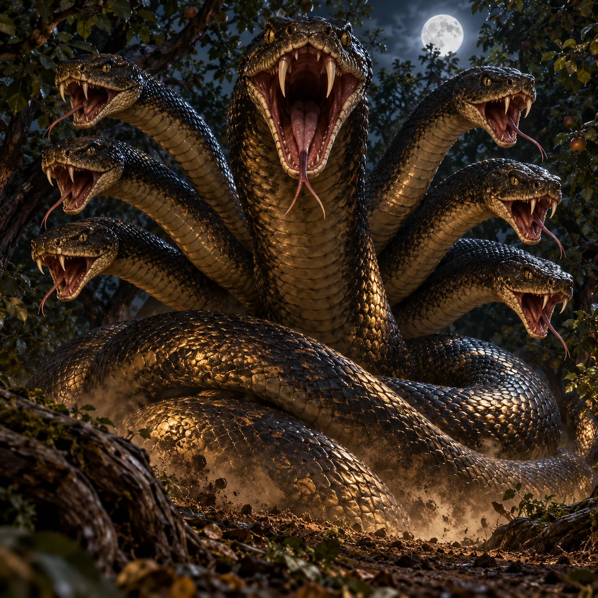
Bashkir seven-headed serpent variant in its planted garden.
Aura: Threat from the seven-headed serpent form and confrontation in its planted garden [yalmavuz-c03].
Audit ciri dan sumber
- [object Object]
- [object Object]
Native and 200px inspected: exactly seven readable serpent heads, connected coils, confrontation moment, tree garden, no supernatural effects or text; all seven Sangar checks yes.
Review sumberONE original square premium painterly cinematic Mitoloka illustration of Yalmavuz, the evil Bashkir many-headed serpent demon.
ANATOMY: Exactly SEVEN separate serpent heads on seven clearly countable necks joined to ONE thick coiled serpent trunk. No legs, no wings, no horns; serpent heads with ordinary natural snake mouths. Arrange seven heads as a clear fan: three at upper left, one highest central, three at upper right, every face unobscured. [yalmavuz-c03]
MOMENT: Surge forward from its coils toward the viewer in a threatening confrontation, the central open mouth closest and the other six heads braced forward.
POWER: No magical power depicted; threat from the documented seven-headed serpent anatomy only.
SCALE & CAMERA: extreme low close camera at ground level, tightly framed coils and seven looming heads, no unsupported giant-size comparison.
LIGHT & WEATHER: one cold moon rim light, deep walnut shadows and antique-gold reflected highlights; ordinary slight garden ground dust from the coil movement.
SURFACE: rough detailed snake scales, damp earth and bark.
SETTING: a dense garden of trees the demon planted, secondary dark background. [yalmavuz-c03]
MOOD: predatory, dangerous and imposing, never cute, calm or decorative.
HARD CONSTRAINTS: exactly seven heads, all readily countable; no text, lettering, logo, border, frame or watermark; no extra heads or limbs; no borrowed entertainment design; no nudity or gore; no generic glow aura, neon outline or energy ribbons.
Yel iyesi
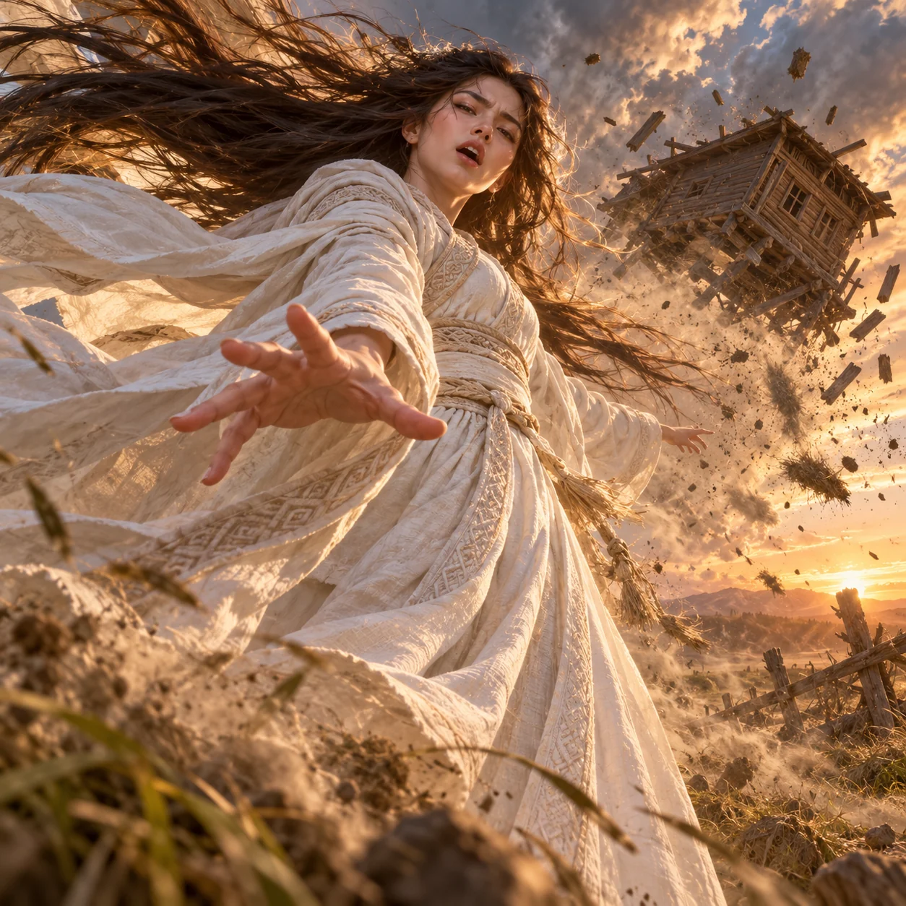
White-robed female wind spirit singing a house-lifting gust.
Aura: Awe from voice-generated house-lifting wind [yel-iyesi-c08], protective spirit [yel-iyesi-c03].
Audit ciri dan sumber
- [object Object]
- [object Object]
- [object Object]
Native and 200px inspected: white fully opaque robes, singing face, powerful physical wind lifting house; foreground hand has five digits, no wings/aura/text. All seven Sangar checks yes.
Review sumberONE original square premium painterly cinematic Mitoloka illustration of Yel iyesi, a protective female wind spirit of Turkic folklore.
ANATOMY: One beautiful adult maiden, one head, two arms, two legs, fully covered in heavy opaque white dress and special flowing white robes, long uncut hair; no wings or invented crown. [yel-iyesi-c04,yel-iyesi-c05]
MOMENT: Sing forcefully into a roaring gust, face tilted down toward viewer, one hand reaching commandingly through the rushing air, robe and hair swept horizontally.
POWER: Her voice creates immense physical wind: uprooted wooden house rises in the air behind her, airborne ordinary dust and torn grass form the gust, no luminous ribbons. Keep the lifted house secondary but unmistakeable. [yel-iyesi-c08]
SCALE & CAMERA: extreme low tight camera on her commanding upper body and extended hand, normal bodily scale conveyed by perspective alone; no giant body.
LIGHT & WEATHER: warm sunset side light and white cloth rim light amid dense naturally dusty rushing wind.
SURFACE: layered opaque woven white textile, realistic hair, wooden beams.
SETTING: wilderness at the edge of a small dwelling, clouds above. [yel-iyesi-c04,yel-iyesi-c08]
MOOD: reverent, awe-inspiring protective spirit exercising immense power, authoritative and overwhelming, never evil, cute or casually human.
HARD CONSTRAINTS: no text, lettering, logo, border or watermark; no extra limbs or fingers; no borrowed entertainment design; no nudity, transparent cloth or gore; no generic glow aura, neon outline, floating runes or energy ribbons.
Yemaja
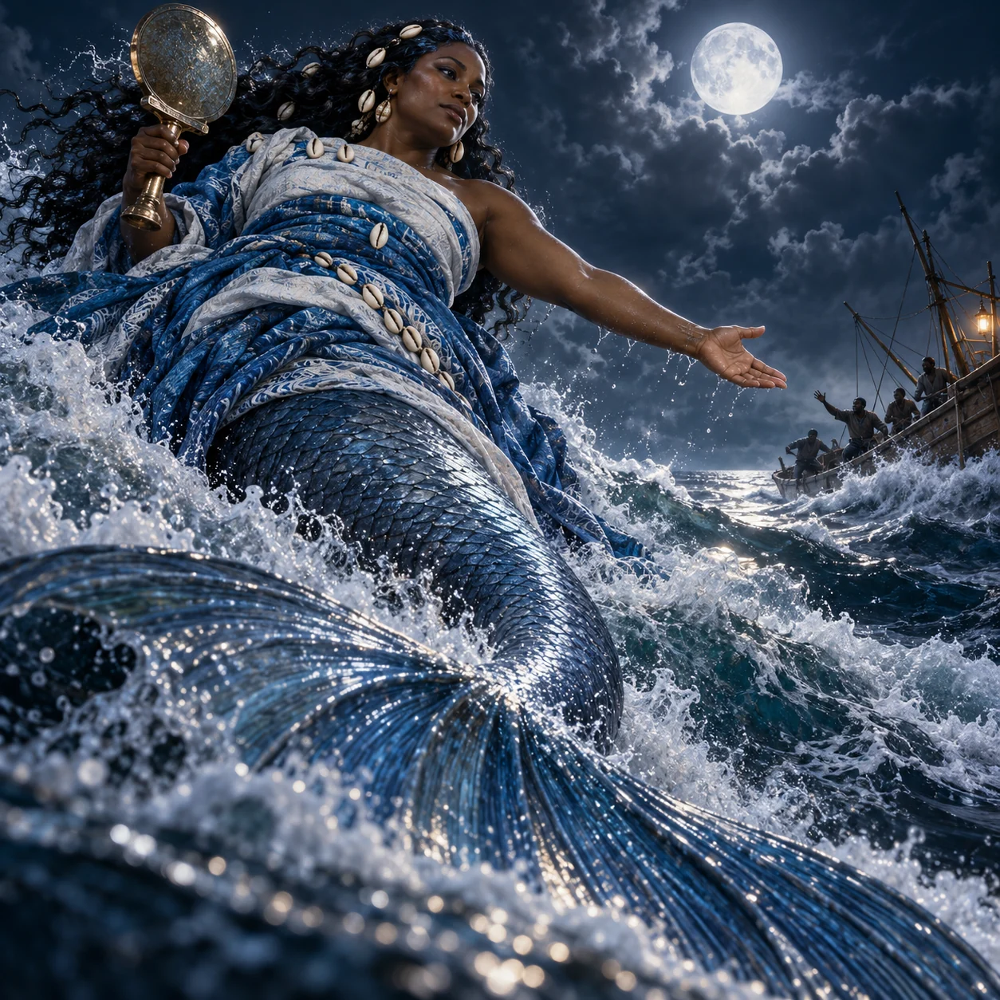
Reverent mermaid sea-orisha form rising amid surf with Abebê hand mirror.
Aura: Awe from mermaid form [yemaja-c07], turbulent sea realm and protective approach to fishermen [yemaja-c02,yemaja-c12].
Audit ciri dan sumber
- [object Object]
- [object Object]
- [object Object]
Native and 200px checked: unmistakable single fish tail, full opaque wrap, Abebê mirror and cowries; forceful sea emergence and compassionate reaching gesture with distant boat; no text, aura, gore or human legs. All seven Sangar checks yes.
Review sumberONE original square premium painterly cinematic Mitoloka illustration of Yemaja, revered Yoruba water orisha represented in a documented mermaid form.
ANATOMY: One dignified adult dark-skinned woman with one head, two arms, a single long scaly fish tail instead of human legs, the entire tail visible sweeping across foreground; upper torso fully covered by a heavy opaque ceremonial blue-white wrap. She holds a large clear hand mirror Abebê in one hand; a few cowrie shells on the opaque wrap. [yemaja-c07,yemaja-c18,yemaja-c08]
MOMENT: Rise powerfully through turbulent sea surf, curve the unmistakable fish tail toward the camera, and extend her free open hand toward a distant distressed fishing boat; her expression calm authoritative compassion, body in active protective motion.
POWER: Ocean water surges physically around her tail as the documented water deity, natural breaking waves and water spray; her presence protects fishermen and shipwreck survivors, no magic light. [yemaja-c02,yemaja-c12]
SCALE & CAMERA: extreme low waterline close-up, she fills the frame through perspective without invented giant stature, background boat distant.
LIGHT & WEATHER: one moonlit silver rim on wet scales and sea spray, deep walnut-blue shadows, antique-gold mirror metal.
SURFACE: wet fish scales, real opaque woven cloth, polished metal hand mirror and cowrie shell.
SETTING: open ocean waves in the diaspora sea tradition. [yemaja-c10,yemaja-c12]
MOOD: profoundly reverent and awe-inspiring, protective mother of waters, never predatory, cute or a fashion portrait.
HARD CONSTRAINTS: Mermaid fish tail must be unmistakable, no human legs; no invented crown or weapons; no text, logo, border or watermark; no extra limbs or fingers; no borrowed entertainment design; no nudity, transparent clothing or gore; no generic glow aura, neon outlines or energy ribbons.
Zaebos
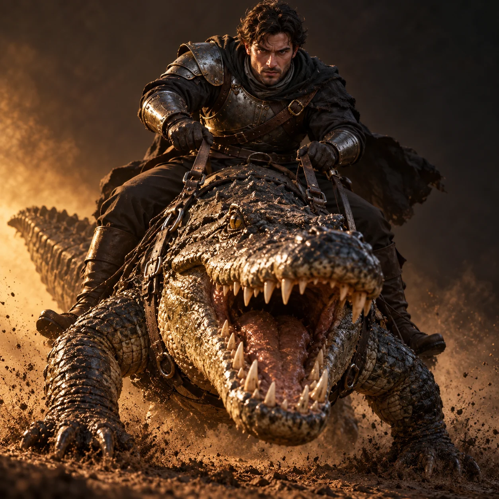
Handsome infernal soldier driving his crocodile mount into confrontation.
Aura: Threat from impossible crocodile-mounted soldier identity [zaebos-c01,zaebos-c03] and direct advancing movement.
Audit ciri dan sumber
Native and 200px checked: handsome armed soldier is visibly astride a single lunging crocodile, stern gaze and threatening snout; correct rider limbs, crocodile forelegs/tail and plausible hidden hind legs; dust physical not magic, no text. All seven Sangar checks yes.
Review sumberONE original square premium painterly cinematic Mitoloka illustration of Zaebos, infernal Grand Count in the form of a handsome soldier mounted on a crocodile.
ANATOMY: One handsome adult male soldier, one head, two arms and two legs, fully opaque dark practical soldier clothing and plain metal armor, seated astride ONE crocodile with one long toothed crocodilian head, four legs and one tail; rider and crocodile both highly readable. No horns, no demon wings, no fantasy crown. [zaebos-c01,zaebos-c03]
MOMENT: Drive the crocodile straight toward the viewer; its open jaw lunges close to the low camera, forefeet press against earth while rider leans commandingly forward and fixes the viewer with stern eyes, gripping a plain harness.
POWER: No documented power; menace through the impossible crocodile-mounted soldier form, aggressive physical motion and lighting only.
SCALE & CAMERA: extreme low close angle at crocodile snout height, both rider torso and the full crocodile head dominate the square; natural plausible crocodile size, no invented colossal beast.
LIGHT & WEATHER: single warm low side light, deep shadows and rim light, ordinary dust thrown by the advancing animal.
SURFACE: wet rough crocodile scales, aged iron, heavy opaque textile.
SETTING: minimally specified dark earth and neutral shadow background; source does not identify a terrestrial habitat, do not invent palace or swamp.
MOOD: dangerous, commanding and imposing infernal rider, never cute or a casual animal ride.
HARD CONSTRAINTS: no text, lettering, logo, border, frame or watermark; no extra heads or limbs, no horns or wings, no magical effects; no borrowed entertainment design; no nudity or explicit gore; no generic glow aura, neon outline or energy ribbons.
Zhuque
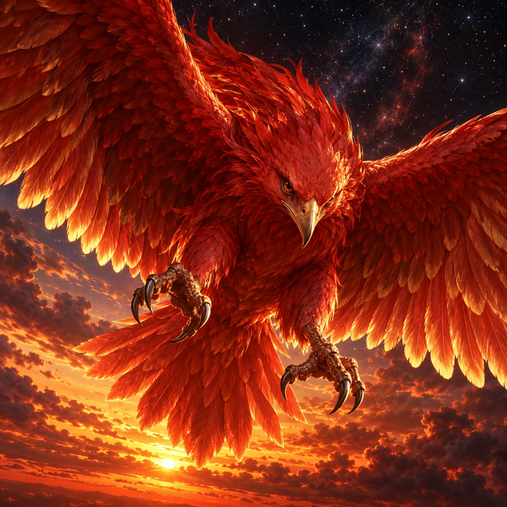
Vermilion constellation bird banking toward the viewer against stars.
Aura: Awe from the Vermilion Bird constellation spirit [zhuque-c01,zhuque-c03]; fire correspondence c02 appears in color and lighting only.
Audit ciri dan sumber
- [object Object]
- [object Object]
Native and 200px inspected: red celestial bird actively descending, two feather wings and two feet, closed beak, single tail; no fire emission, stars only backdrop, strong awe and dominant framing. All seven Sangar checks yes.
Review sumberONE original square premium painterly cinematic Mitoloka illustration of Zhuque, the Vermilion Bird spirit of the Chinese southern constellations, distinct from fenghuang.
ANATOMY: One magnificent entirely vermilion-red mythological BIRD, one head with a clearly visible bird beak, two huge spreading feathered wings, two avian feet and a single layered feather tail. Natural coherent avian anatomy, no dragon parts, no crown, no horns; plumage is red as its name states. [zhuque-c01,zhuque-c08]
MOMENT: Descend toward the low camera with wings thrust forward and downward in a powerful banking stroke, talons flexed, direct commanding bird gaze; beak closed rather than smiling, the body and wings fill nearly all the image.
POWER: No claimed fire-breathing or magic emission. Fire correspondence is expressed by vermilion color and hot golden lighting only, never flames or energy emanating from the bird. [zhuque-c02]
SCALE & CAMERA: extreme low close view underneath the banking bird, feather detail in the foreground; dominance by perspective, no terrestrial object used to imply giant size.
LIGHT & WEATHER: one deep summer sunset opening below a dark starry celestial sky, strong warm rim light, deep walnut-red shadows.
SURFACE: layered realistic red feathers with worn pale-gold edges from illumination, sharp bird beak.
SETTING: celestial sky, normal distant stars in the background establishing the constellation spirit, no drawn star-lines or glowing symbols. [zhuque-c01,zhuque-c03]
MOOD: reverent, overwhelming and awe-inspiring celestial presence, not an ordinary bird photograph, never cute or decorative.
HARD CONSTRAINTS: no text, logo, frame, border or watermark; no invented fire power, luminous aura, energy ribbons, constellation diagrams or runes; no extra heads or limbs; no borrowed phoenix entertainment design; no nudity or explicit gore.
Abzar iyesi
Menunggu gambar yang lolos audit
Aitu
Samoan shark-incarnation Aitu surging past waterline with distant respectful witness.
Aura: Awe from a tutelary god's visible shark incarnation venerated by its human ward [aitu-c10,aitu-c11,aitu-c12].
Audit ciri dan sumber
- [object Object]
- [object Object]
Native and 200px checked: powerful natural shark incarnation surging past camera, normal gills/fins/teeth, no monstrous additions or magic; lowered-head distant witness establishes veneration without specific ritual props; perspective, not giant size. All seven Sangar checks yes.
Review sumberONE original square premium painterly cinematic Mitoloka illustration of Aitu, using the documented Samoan shark incarnation of a revered tutelary spirit.
ANATOMY: ONE powerful natural shark incarnation with exactly one head, ordinary shark eyes, gills, two pectoral fins, dorsal fin and single shark tail; coherent shark anatomy without horns, limbs, gold ornaments or altered magical features. [aitu-c11,aitu-c12]
MOMENT: Surge upward and bank powerfully past the low waterline camera, broad wet shark head and eye close in foreground, mouth slightly open revealing natural teeth; strong muscular turn throws a crest of physical water. A small distant human in a simple wooden canoe faces it with lowered head in reverence, no ritual objects. [aitu-c11]
POWER: No visible possession or supernatural beam, no invented control of waves; water splashes naturally from the shark's powerful movement only.
SCALE & CAMERA: close low waterline split-level composition, shark dominates through near perspective and canoe stays far in background, normal shark size, no giant-size comparison.
LIGHT & WEATHER: one low sunset shaft between dark clouds, gold rim light across wet snout and spray, deep walnut and ocean-blue shadows.
SURFACE: real shark skin, wet gill slits, physical water droplets, plain wood.
SETTING: sea, the setting implicit in the documented fish-of-the-sea incarnation; distant horizon with no invented sacred site. [aitu-c12]
MOOD: reverent overwhelming presence of a tutelary deity, awe rather than horror, no attack on the human, never cute or calm animal photograph.
HARD CONSTRAINTS: no text, lettering, logo, border or watermark; no extra heads or fins; no entertainment design; no invented horns, glowing eyes, magical water, runes or energy ribbons; no nudity or explicit gore.
Akashaguma
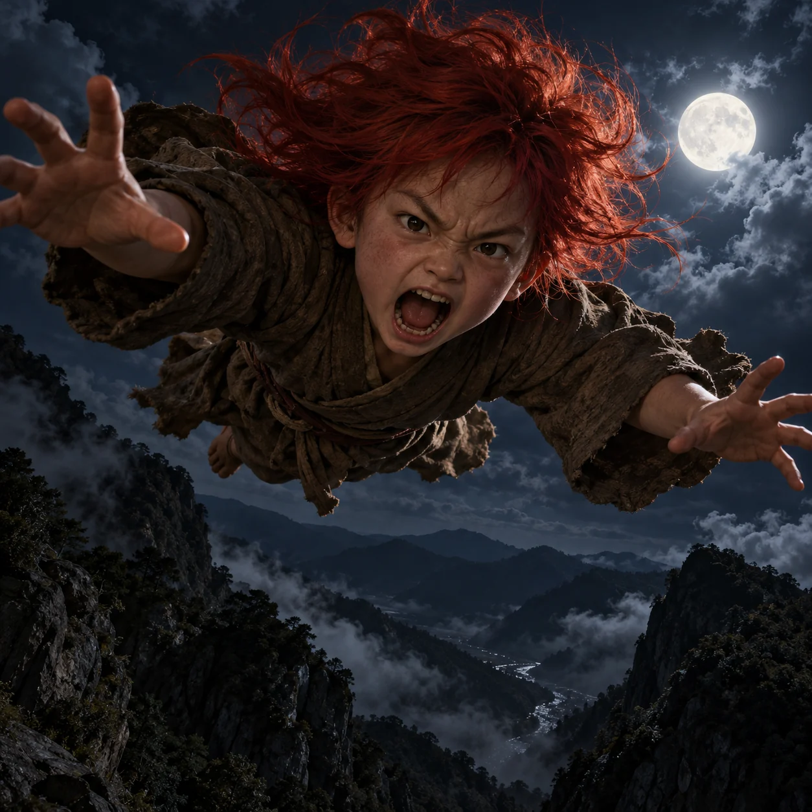
Kagawa red-haired childlike yokai flying and shouting in mountain night sky.
Aura: Uncanniness from red-haired childlike yokai [akashaguma-c01] flying unsupported and shouting above the mountains [akashaguma-c06].
Audit ciri dan sumber
- [object Object]
- [object Object]
- [object Object]
Native and 200px inspected: one red-haired childlike form airborne over mountains, shouting uncannily, two natural arms and legs without invented wings; opaque robes, strong confrontation, no text or magic trails. All seven Sangar checks yes.
Review sumberONE original square premium painterly cinematic Mitoloka illustration of Akashaguma, the red-haired childlike yōkai of Shikoku, using the Kagawa flying tradition.
ANATOMY: ONE small childlike yōkai with red hair, one head, two arms, two legs, dressed in entirely opaque worn earth-brown simple robes. Fierce tightly furrowed brows and wide shouting human mouth; normal eyes, teeth and hands; no wings, horns or claws. [akashaguma-c01]
MOMENT: Fly unsupported through mountain night air shouting loudly, body horizontal and curling down toward the viewer with both hands thrown outward, wind-tossed intense red hair. The apparition is the large foreground subject, visibly airborne above a steep mountain gap. [akashaguma-c06]
POWER: Documented unassisted flight only, made visible by body position above the ground; no magic trails, no glowing aura, no invented attack.
SCALE & CAMERA: extremely close low upward camera underneath the flying childlike spirit, face and hands foreground, distant mountain ridges below, no invented giant size.
LIGHT & WEATHER: one low cold moon side light, warm red hair accent, deep walnut shadows and ordinary cloud haze.
SURFACE: tangled red hair, weathered fully opaque cloth, natural face texture.
SETTING: mountain sky at night from Kagawa tradition. [akashaguma-c06]
MOOD: uncanny, confrontational and unsettling supernatural apparition, not cute, smiling, playful cartoon or ordinary child portrait; respect the folklore rather than adding demonic parts.
HARD CONSTRAINTS: no text, lettering, logo, border or watermark; no extra limbs or fingers; no borrowed entertainment design; no nudity, transparent cloth, child peril or gore; no generic glow aura, neon outlines or energy ribbons.
Negro-d'Água
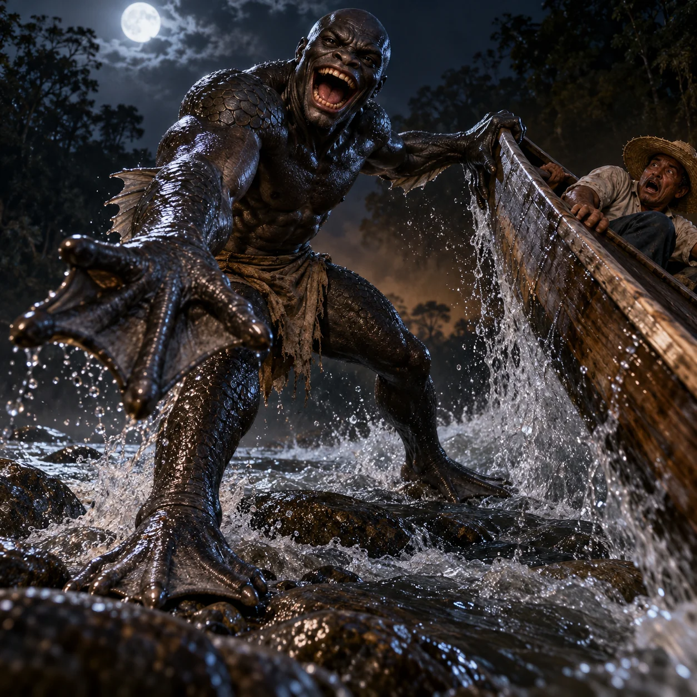
Bald black scaled amphibian form capsizing canoe with duck-like hands and feet.
Aura: Menace from documented amphibian duck-handed form [akva-nigrulo-c02,akva-nigrulo-c04] physically overturning canoe [akva-nigrulo-c02,akva-nigrulo-c08].
Audit ciri dan sumber
- [object Object]
- [object Object]
- [object Object]
Native and 200px inspected: bald black-scaled humanoid/amphibian, two webbed duck-like hands and two duck-like feet visible, forearm fins, loud laughing mouth; visibly tipping canoe, moonlit river rocks, opaque wrap, no aura or text. All seven Sangar checks yes.
Review sumberONE original square premium painterly cinematic Mitoloka illustration of Negro-dÁgua, the bald black amphibian river being who overturns fishermen’s canoes.
ANATOMY: ONE tall strong bald black-skinned humanoid fused with amphibian: one head, two arms with broad visibly webbed duck-like hands, two legs with visibly webbed duck-like feet; patches of scales mixed into skin and small fins on forearms. No hair, horns, wings or extra limbs. Fully opaque rough short waist wrap covers groin; nonsexual creature depiction. [akva-nigrulo-c02,akva-nigrulo-c04]
MOMENT: Laugh loudly with a threatening open mouth while heaving one side of a canoe upward, one broad webbed hand visibly gripping the gunwale and the other reaching toward the viewer; both webbed feet brace among river rocks. Canoe tilts sharply and a fisherman struggles to balance, no blood or injury. [akva-nigrulo-c02,akva-nigrulo-c08]
POWER: Physical canoe-capsizing action and real splashing river water only, no luminous aura or invented water control. [akva-nigrulo-c02]
SCALE & CAMERA: extreme low near-water camera, close amphibian face and duck hands dominate; tall strong man size as sourced, no giant size.
LIGHT & WEATHER: one cold moonlight rim across wet scales and black skin, warm walnut shadows, spray and river mist.
SURFACE: wet black amphibian skin interspersed with scales, duck-like webbing, worn wood and damp stone.
SETTING: rocks in a Brazilian river at moonlit night. [akva-nigrulo-c01,akva-nigrulo-c08]
MOOD: uncanny and dangerous capsizing trickster, imposing, never a cute animal or ordinary man.
HARD CONSTRAINTS: both duck-like hands and feet must read clearly, bald head; no text, logo, frame or watermark; no extra heads or limbs; no entertainment design; no nudity or gore; no generic glow aura, neon outline, runes or energy ribbons.
Alambala
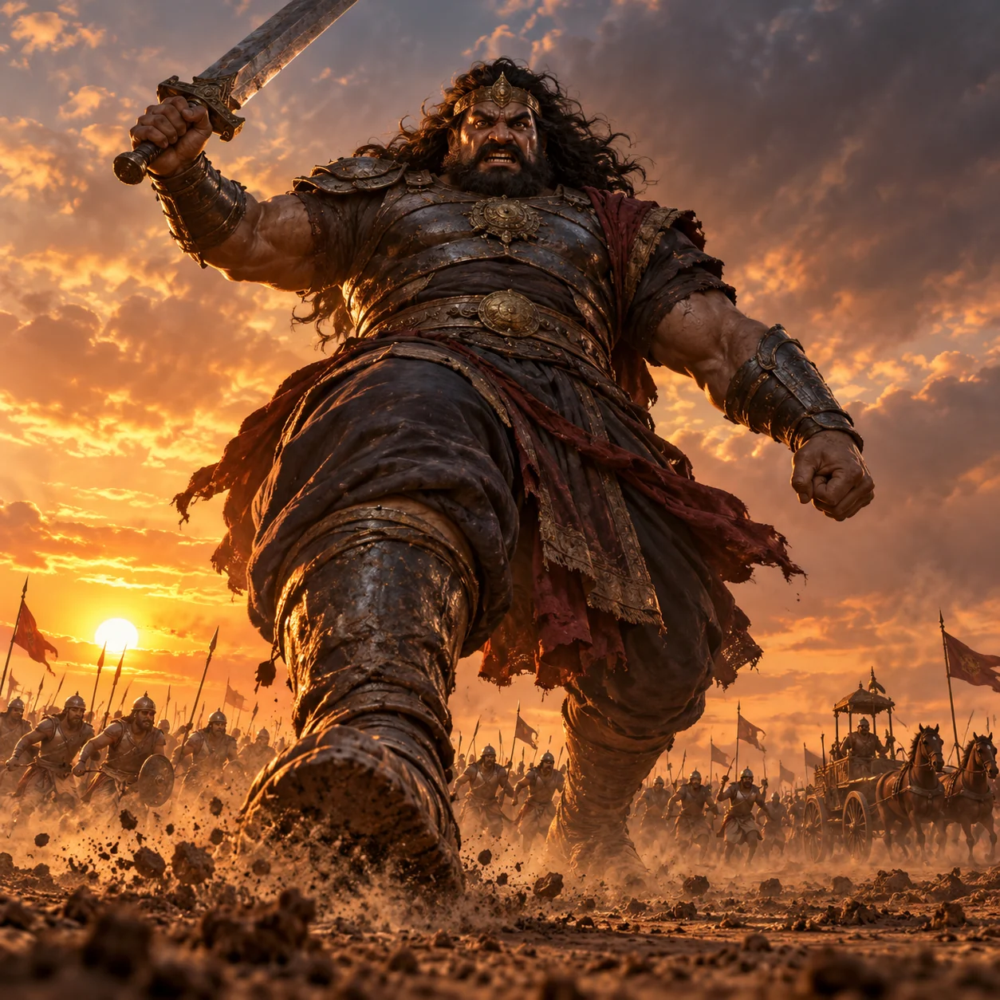
Humanoid giant rakshasa warrior charging with a plain sword at Kurukshetra.
Aura: Awe from giant warrior size [alambala-c06] and formidable armed Kurukshetra battle charge [alambala-c02,alambala-c04].
Audit ciri dan sumber
- [object Object]
- [object Object]
- [object Object]
Native and 200px inspected: giant humanoid warrior actively charging, one sword, two arms and two legs, human soldiers near feet provide true sourced giant scale, battlefield chariot, no spells/horns/gore/text. All seven Sangar checks yes.
Review sumberONE original square premium painterly cinematic Mitoloka illustration of Alambala, the rakshasa king and giant warrior fighting for the Kauravas at Kurukshetra.
ANATOMY: One immense humanoid male giant warrior with one head, two arms and two legs, fully clothed in layered opaque dark battle garments and plain weathered armor; no horns, invented tusks, wings or extra arms. Rugged furious face with natural human eyes and teeth. One plain heavy sword held visibly in his right hand, chosen from the various weapons mentioned in battle. [alambala-c01,alambala-c04,alambala-c06]
MOMENT: Charge across the battlefield straight toward the low camera, raise the sword to strike, the free fist clenched; heavy foot thrusts forward kicking up ordinary dirt. His fierce giant bodily size is clearly established by several distant human soldiers close behind his feet, no injury or blood. [alambala-c02,alambala-c04]
POWER: No magic effect depicted; warrior and magician identity does not document a visible spell. Physical dust and weapon motion only. [alambala-c08]
SCALE & CAMERA: extreme low foot-level angle, giant fills the frame from boots to head and sword, humans standing near the ground at his feet establish documented giant size. [alambala-c06]
LIGHT & WEATHER: one low battlefield sunset sidelight, gold iron rim highlights, deep walnut shadows, ordinary battle dust.
SURFACE: scarred iron, dense opaque woven garments, dust-covered skin and battlefield earth.
SETTING: Kurukshetra War battlefield, plain distant soldiers and a simple chariot silhouette, no invented palace. [alambala-c02,alambala-c08]
MOOD: reverent treatment of Hindu epic, awe-inspiring formidable giant combatant, fierce in battle, never comic or an ordinary posing soldier.
HARD CONSTRAINTS: no text, lettering, logo, frame or watermark; no extra heads or limbs; no invented horns, spells, glowing weapons or energy ribbons; no borrowed film/game/anime design; no nudity or explicit gore.
Alraune
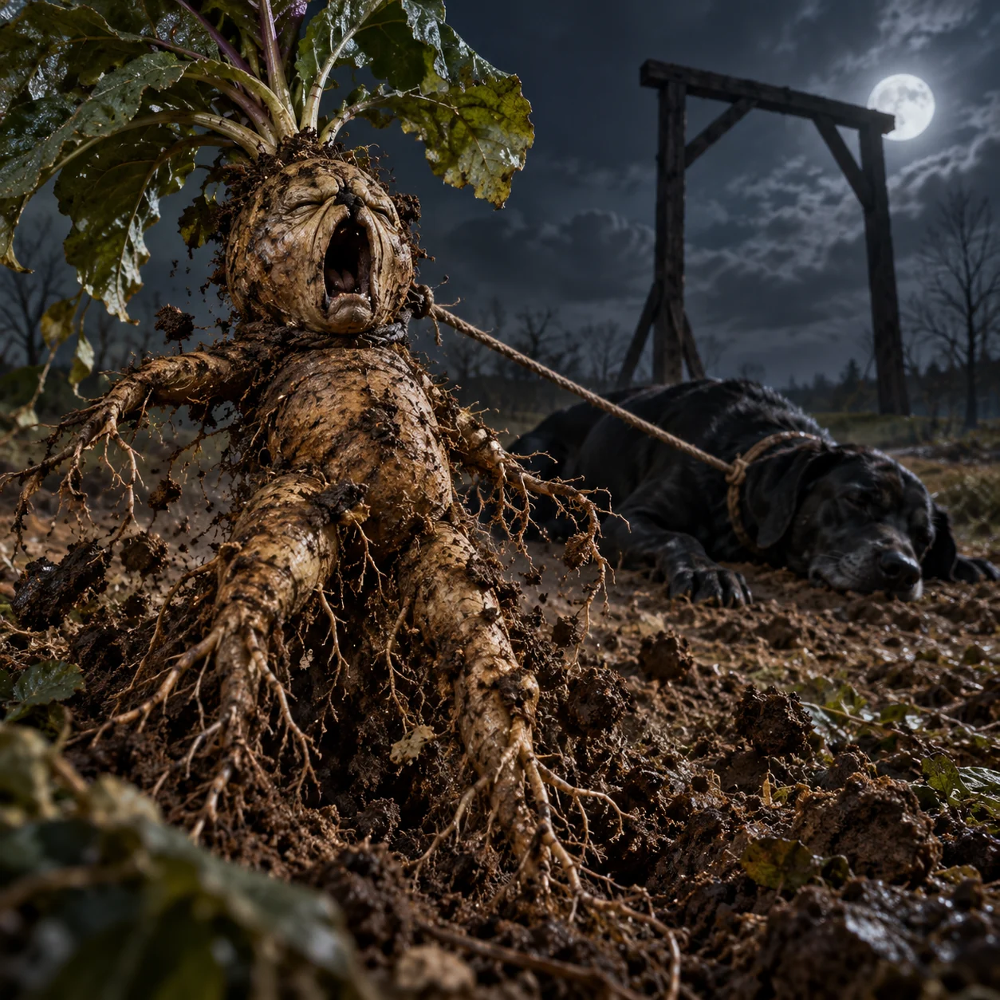
Humanoid mandrake root emitting its fatal uprooting cry, black dog and cord behind.
Aura: Danger from the humanoid mandrake root [alraune-c03,alraune-c06] whose uprooting human-voiced cry kills the dog [alraune-c07].
Audit ciri dan sumber
- [object Object]
- [object Object]
- [object Object]
Native and 200px checked: visibly woody dirty humanoid root screaming as uprooted, cord visibly attached to black dog's neck; non-graphic collapsed dog, empty gallows, source fatal cry visible through outcome, no gore/text/magic sound rings. All seven Sangar checks yes.
Review sumberONE original square premium painterly cinematic Mitoloka illustration of Alraune, the vaguely human-shaped mandrake root of German medieval belief, at the moment of its deadly uprooting cry.
ANATOMY: ONE small mandrake ROOT, rough earth-covered woody root shaped vaguely like a tiny human body: single rounded root-head and root-torso, two tapering root-branch arms and two thick divided root legs, leafy mandrake shoots from crown. Keep it visibly a dirty knotted plant root, not a flesh baby, doll or ordinary human. A dark split in the root head forms the human-voiced screaming mouth, not animal fangs. [alraune-c03,alraune-c06]
MOMENT: Burst out of torn earth pulled by a simple cord that runs from plant to the neck of a black dog behind; the root screams with its split mouth while the black dog collapses from the documented lethal cry, eyes shut, no injuries or blood. Root fills foreground and its torn root fibers scatter real soil. [alraune-c07]
POWER: The human-voiced scream kills the listening dog, shown only by a non-graphic collapsed animal; no visible sound rings, magic lights or invented roots attacking anyone. [alraune-c07]
SCALE & CAMERA: extreme near-ground macro low angle facing the small root, black dog naturally farther back, no invented giant size.
LIGHT & WEATHER: one cold moon sidelight on root fibers, deep walnut earth shadows, ordinary drifting disturbed dirt.
SURFACE: cracked ochre mandrake root, tangled fine root hairs and adhered soil, real damp leaves.
SETTING: ground beneath an empty wooden gallows, no human corpse and no noose foreground. [alraune-c06]
MOOD: deeply uncanny and dangerous living root with a fatal cry, never cute, cartoon baby, decorative mandrake or a normal plant study.
HARD CONSTRAINTS: no text, logo, border or watermark; no extra root bodies, heads or limbs; no entertainment design; no nudity, flesh infant, blood or explicit gore; no generic glow aura, energy ribbons, visible sound effects or floating runes.
Amanozako
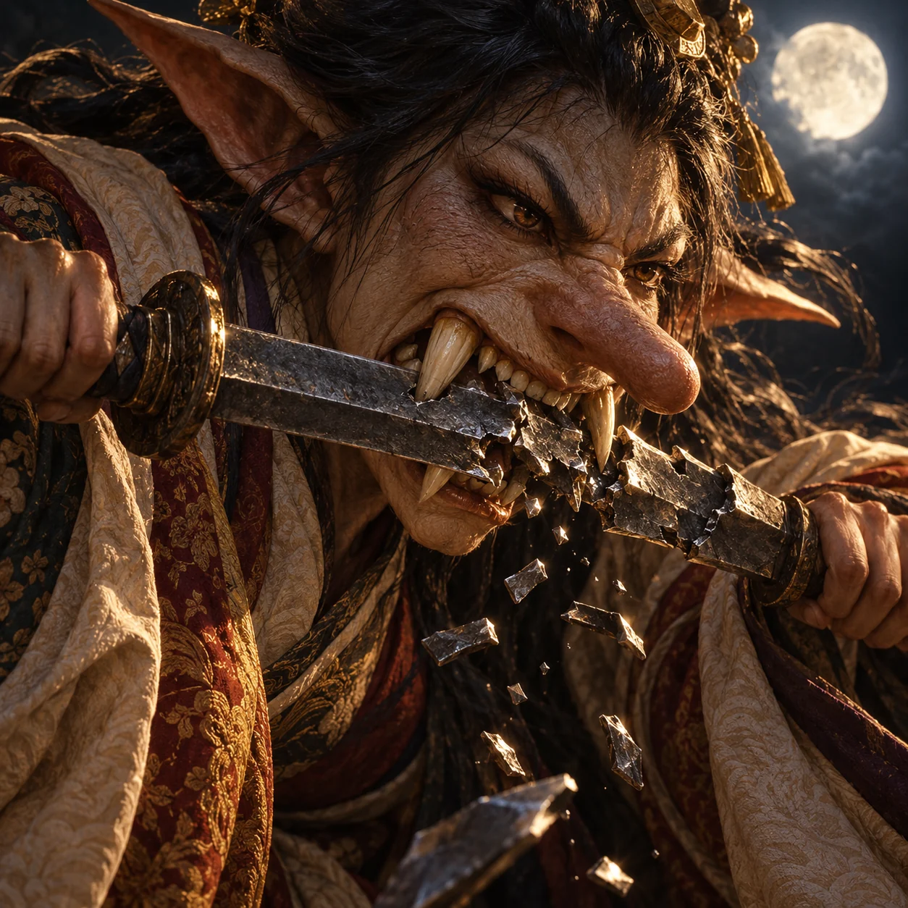
Beast-faced long-nosed long-eared goddess chewing a metal blade with immense fangs.
Aura: Source beast-face/longnose/ears/fangs c02/c06 and weapon-chewing deedc07 create reverent force.
Audit ciri dan sumber
- [object Object]
- [object Object]
Recovered native+200 inspected: long/high projectingnose,longears,beastface,greatfangs c02c06, blade physically shreddedc07, opaque robes. Imposing fierce goddess, no imported fairy/tenguwings/beak. Allseven Sangar yes; originalAtoolgeneration recovered, currentCreviewer.
Review sumberONE original square premium painterly cinematic Mitoloka illustration of Amanozako, fierce Japanese goddess described with a beast-like face, long nose, long ears and mighty fangs.
ANATOMY: ONE goddess with a near-human female body, one head, two arms and two legs, fully covered in heavy opaque layered ceremonial robes. Her clearly BEAST-LIKE face has a conspicuously long projecting raised nose, two long ears, and enormous visible fangs; human-like body but unmistakable monstrous face, no horns, wings or imported tengu beak. [amanozako-c02,amanozako-c06]
MOMENT: Bite down hard on a plain metal sword held horizontally in both hands; huge fangs tear through the blade so its edge is visibly chewed ragged and broken metal fragments tumble below her jaws. Face dominates, eyes express terrible divine resolve, robes sweep from the exertion. [amanozako-c07]
POWER: Documented fangs physically chew sharp metal weapons to pieces; show only bent ragged steel and falling metal fragments, no magical glow or energy. [amanozako-c02,amanozako-c07]
SCALE & CAMERA: extremely low tight three-quarter close angle, large nose, long ears, fangs and bitten blade all unobscured; no unsupported giant size or miniature people.
LIGHT & WEATHER: single moonlit sidelight, antique-gold reflected rim along fangs and steel, deep walnut shadows.
SURFACE: textured beast-like facial skin, coarse layered opaque robes, dark pitted metal blade with freshly torn edge.
SETTING: restrained dark neutral backdrop with no specific geography claimed; subject and weapon are the scene.
MOOD: reverent awe toward a formidable fierce goddess, overwhelming physical strength, never cute, comic, fairy-like or ordinary human.
HARD CONSTRAINTS: no text, logo, border, frame or watermark; no extra limbs, heads or fingers; no horns, wings or tengu beak; no game/anime/film design, especially no modern fairy interpretation; no nudity or gore; no generic glow aura, neon outline, runes or energy ribbons.
Anchanchu
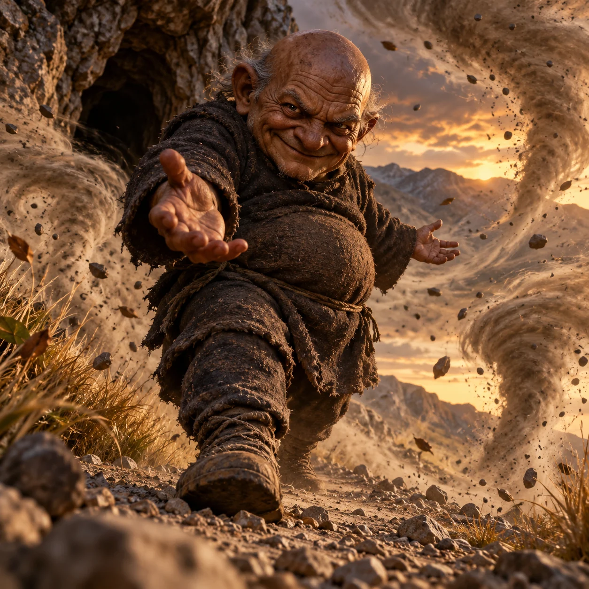
Paredes' little bald big-headed pot-bellied smiling dwarf creates roadwhirlwinds.
Aura: Littleuncannydeityformc11/sinisterconstant smilec14 contrasted with source roadwhirlwinds c15, no genericmagic.
Audit ciri dan sumber
- [object Object]
- [object Object]
- [object Object]
Native+200 inspected: littleoldbaldlargehead/potbelly/sinisterconstant smile c11c14, forwardstep/welcominghands c13, physical roadwhirlwinds c15 around smallbody. No added horns/fangs/giantsize. Seven Sangar tests yes.
Review sumberONE original square premium painterly cinematic Mitoloka illustration of Anchanchu, the sinister Aymara spirit in Paredes' documented form of a bald big-headed pot-bellied old dwarf, smiling while causing road whirlwinds.
ANATOMY: one LITTLE old male DWARF, smallstature with oversizedhead,baldscalp and roundpotbelly [anchanchu-c11], onehead,twoarms,twolegs,twoeyes,ordinaryhuman teeth, no horns,animalparts or invented vampirefangs. Always SMILING sinisterly[c14], not roaring. Fullyopaque dark coarse tunic/pants editorial cover entirebody while clearly showing potbellysilhouette.
MOMENT: stride down rockyroad towardviewer with onefoot landing and bothhands extending in a deceitfully welcoming gesture, sinister broadsmile and knowing intenteyes[c13,c14]. Windlashes around him, clothing whips and roadgrit swirls violently outward.
POWER: hurricanes and whirlwinds produced when he travelsroads [anchanchu-c15]; actual dense air-driven dustvortices, stonegrit, bentgrass and blownleaves, no luminous energy. Smallbody remains central commanding cause, whirlwind secondary.
SCALE & CAMERA: extreme low tight camera beside dwarf's forwardfoot, smallbody fillsframe by closeperspective, ordinary tallgrasses besideknees/hips establish smallstature, no giant enlargement. Largebaldhead,potbelly,smile all readable.
LIGHT & WEATHER: onewarm dusk sidelight cuts stormdust, deep walnutshadows, real turbulentwind.
SURFACE: oldweatheredskin,baldhead,roughopaquecloth,grit and roughrock.
SETTING: road at mouth of desolate altiplanocave [anchanchu-c10,c15], distant mountainrock barelyseen.
MOOD: overwhelming uncanny sinisterdeity, deviously smiling menace rather than comicdwarf; respects traditionaldepiction, no gore.
HARD CONSTRAINTS: no text,logo,border,frame,watermark; onehead,twoarms,twolegs,noextrafingers; no film/game/anime/comicdesign; no nudity/transparentcloth/gore; no glow aura,neon,energyribbons,horns,vampirefangs,giantbody,modernminerhat or importeddemoniciconography.
Aobōzu
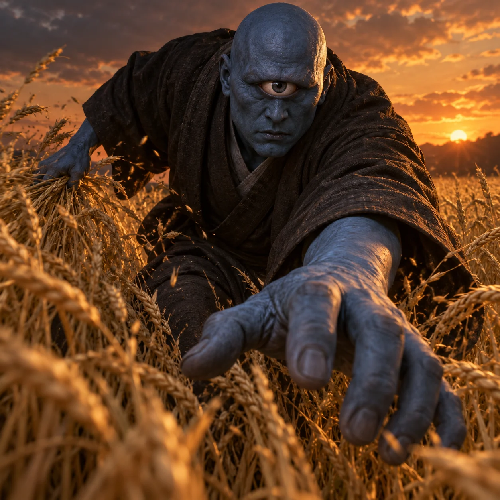
General large one-eyed blue-skinned priestlike yokai surges fromwheat.
Aura: Largeblueoneeyedpriestform(c04/c07) and wheat-emergence threat(c06/c08), no abstractmagic visualized.
Audit ciri dan sumber
- [object Object]
- [object Object]
Native+200 reviewed: blueoneeyedlargepriestlike yokai c04c07, darkopaquepriestrobes and forwardreach from wheatc06c08, no pairednormaleyes/inventedmagic. Onehead,twoarms,sourcefeatures prominent200, physical stalkcontact only; allseven Sangar tests yes.
Review sumberONE original square premium painterly cinematic Mitoloka illustration of Aobozu, choosing the general large ONE-EYED BLUE-SKINNED priest-like yokai emerging from wheat at dusk.
ANATOMY: one large humanoid priestlike figure,onehead,exactly ONE large natural eye centered in face,no other eyes/sockets; BLUEskin, twoarms,twolegs [aobozu-c04,c07]. Completelyopaque heavy simple darkpriestrobe, editorial baldscalp, no rosary,crown,staff,earrings,horns,fangs,wings or tanukiparts.
MOMENT: surge out of tallwheat straight towardviewer, hunched torso and onehand reaching almost into camera, otherhand sweeps stalks aside; oneblueface eye fixes viewer intensely, lips tight with dangerousresolve. This stages the source wheat-emergence/kidnapping threat without showing a victim [aobozu-c06,c08].
POWER: no concrete magicaleffect documented; NONE shown. Real stalks bend and seeds scatter from arm/bodycontact only; no glowing eye or aura.
SCALE & CAMERA: extreme lowcamera withinwheat; largebody rises well above natural wheatstalks near hisknees/waist, head and reachinghand dominate closeframe. Source largepriestsize[c04,c07], no mountainsizedgiant.
LIGHT & WEATHER: onewarm settingsun lights edges of blueface and darkrobe, deep walnutshadows, seed/gritparticles from passage throughwheat.
SURFACE: matte blue humanskin,roughfullyopaque wovenrobes, drygoldenwheat and darkearth.
SETTING: wheatfield/darklonelypath at dusk [aobozu-c06,c08], minimalbackground.
MOOD: uncanny dangerous imposinglylarge priestlike yokai, never ordinaryman,cute,calm or decorative; no mocking religiouscaricature.
HARD CONSTRAINTS: no text,logo,border,frame,watermark; ONEhead,ONEeye,twoarms,twolegs; no hiddenpairednormaleyes,extrafingers/limbs; no borrowedfilm/game/anime/comicdesign; no nudity,gore,childvictim; no genericglowaura,neon,energyribbons,emissiveeye,magicalwheat,weaponorimportediconography.
Apshait
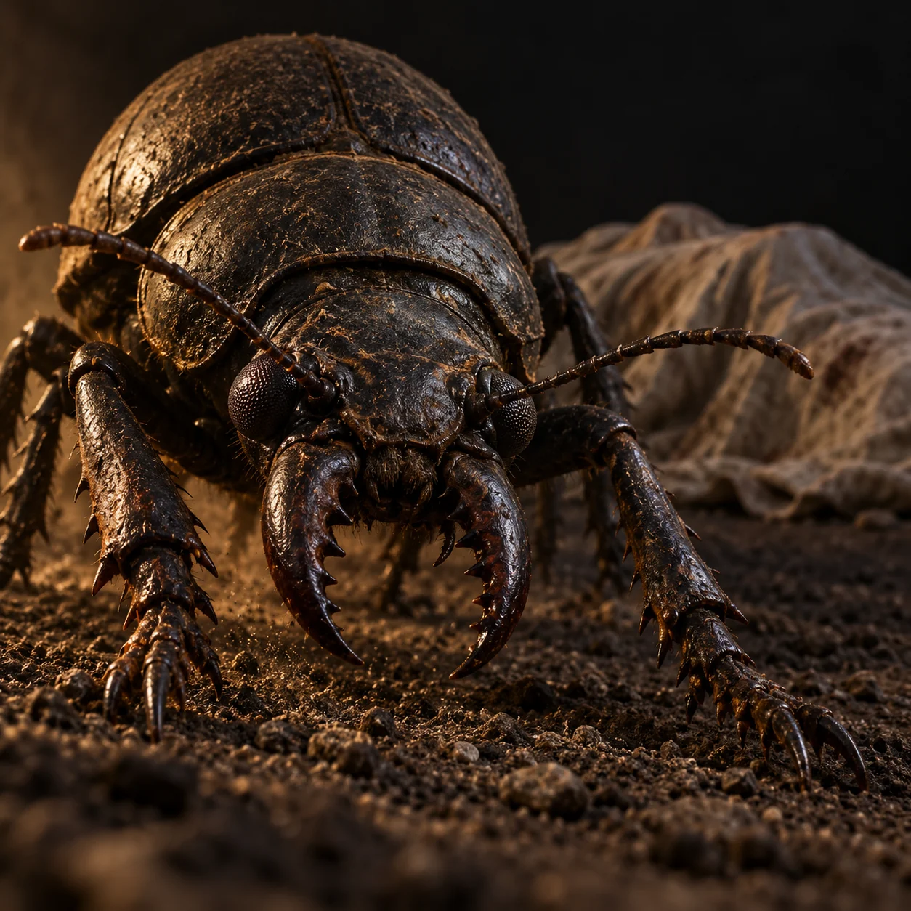
Largebeetle variant approaches fully shrouded corpse with mandibles unfolding.
Aura: Documentedlarge corpse-eatingbeetlec01 in confrontationalmacro approach, without adding supernaturalattributes.
Audit ciri dan sumber
- [object Object]
- [object Object]
Native+200 inspected: darklargebeetle c01 with6legs/2antennae/compoundeyes/pairedmandibles; forcefulcloseapproach toward fullyshroudedcorpse context. No gore,magic,scarabiconography or inventedtomb. Allseven Sangar yes; macro menace avoids oversizedbodyassertion.
Review sumberONE original square premium painterly cinematic Mitoloka illustration of Apshait, the Egyptian corpse-eating monster choosing the source's LARGE BEETLE description.
ANATOMY: one large dark BEETLE, one insecthead,two compoundeyes,two antennae,six jointedinsectlegs,paired beetlemandibles,hard segmented beetle body and closed wingcovers [apshait-c01]. These naturalbeetledetails render category, no specific scarabiconography, horns,humanface,extra limbs or gloweyes. Not a tortoise and not the alternate uncertain cockroachinterpretation[c02,c05].
MOMENT: scuttle forcefully straight towardviewer acrossdarkground, frontlegs gripping grittysurface and powerfulmandibles unfolding widely as it approaches a completelyshrouded corpse; beetlehead and armoredbody dominate, no calm insectspecimen. A body under a single heavy opaque burialcloth lies farther behind its side as the documented corpse-food context[c01], no exposed flesh or gore.
POWER: corpse-consuming flesh-eatingnature[c01] expressed by imminenteating encounter; no magicalpowers,effects,fire or supernatural lights.
SCALE & CAMERA: extreme macro groundcamera just in front of beetle, face/mandibles/frontlegs immense by closeperspective; beetle is source LARGE but no unsupported building-sizedmonster. Shroudedbody remains blurred fartheraway, no unsupported exactbodysize.
LIGHT & WEATHER: oneverylow warm sidelight picks out hard shell, deep dark backdrop, a little ordinarygrit pushed up by advancinglegs.
SURFACE: roughdark brownblack insectchitin,tactile segmentedjoints,leathery mandibles,grittyground,heavyopaque shroudcloth.
SETTING: neutral darkground withcorpse context[c01]; no tombarchitecture,pyramids,hieroglyphs or invented geography.
MOOD: dangerous monstrous corpse-eater and disturbingcloseencounter, not decorativebeetle,cute,calm or ordinaryinsectstudy.
HARD CONSTRAINTS: no text,logo,border,frame,watermark; onehead,sixlegs,twoantennae; no extraeyes/limbs,horns,wingsspread,humanfeatures; no film/game/anime/comicdesign; no nudity,gore,blood,wounds or exposedcorpse; no glowaura,neon,energyribbons,sun-disc,scarabjewelry or invented magic.
Atago Gongen
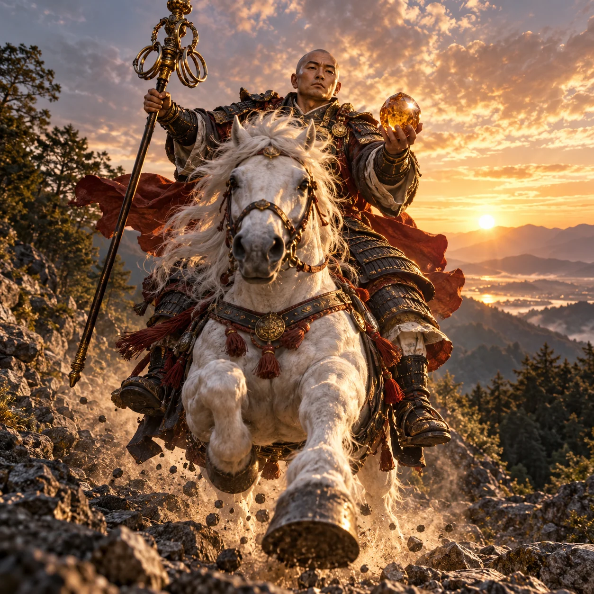
Armored ShogunJizo form charges on whitehorse with ringedstaff and desire-cancelling jewel.
Aura: Documentedmountedarmored bodhisattvac15 and staff/jewel/whitehorse c03 communicate guardianwar-victoryrolesc05c07c09, without inventedmagic.
Audit ciri dan sumber
- [object Object]
- [object Object]
Native+200 inspected: commanding armoredbodhisattvac15 chargingwhitehorsec03, ringedstaff and large reflectivejewel c03 distinct and prominent200; twohumanarms/legs and fourhorselegs/no extralimbs. Reverentguardianawe,no inventedfiremagic; allseven Sangar yes.
Review sumberONE original square premium painterly cinematic Mitoloka illustration of Atago Gongen, reverently depicted in documented Shogun Jizo form: an armored bodhisattva mounted on a WHITE HORSE carrying a RINGED STAFF and JEWEL.
ANATOMY: one humanlike deity,onehead,twoarms,twolegs,fullyopaque heavy historical Japanese plate/lamellarARMOR over clothedbody[c15]. One whitehorse,onehorsehead,fourhorselegs,onetail[c03]. Deity right-hand holds tallmetalRINGEDSTAFF with clearlyvisibleloosemetalrings; lefthand presents one largepolished desire-cancellingJEWEL[c03]. Barecomposed humanlikehead,simple features editorial; no tengubeak,wings,longnose,crown,halo or extraarms.
MOMENT: drive the whitehorse forward directly towardviewer up MountAtago's rocky path, forelegs rising in powerfulchargingstep, hooves scatter realstones; deity leansinto motion and raises ringedstaff authoritatively while presenting jewel towardviewer. Focused divinegaze, armor/cloth swept by motion; decisive guardian arriving, not an ordinaryrider posedstill.
POWER: no concrete supernatural effect invented. Fireprotection/war-victory roles[c05,c07,c09] expressed through armoredguardian stance and purposefulcharge; gemstone reflective,not emittingmagicalbeam; realstonegrit from horsehooves only.
SCALE & CAMERA: extreme lowcamera justbefore whitehorseforehoof, horsehead/riderloom and fillframe; staffrings and jewel clearlyreadable at200px. Naturalhorse/deityscale,nounsupported giantbody or tinyhumancomparisons.
LIGHT & WEATHER: onewarm settingsun behindMountAtago, brightmetallicrim on armor/staffrings/jewel, deepshadow and ordinarydust.
SURFACE: whitehorsehair/mane, darkweatheredlamellarplates,lacquerandmetal,ringswithtactilemetalwear,opaqueheavycloth,polished amberjewel.
SETTING: rocky MountAtago path nearKyoto[c01,c04,c12], minimal mountainforestbackground, no inventedtemple/firebattle.
MOOD: awe-inspiring protective bodhisattva authority, reverentandoverwhelming, never viciousmonster,ordinarymountedman,cute or calm.
HARD CONSTRAINTS: no text,logo,border,frame,watermark; one deity/twoarms/twolegs plus onehorse/fourlegs; no extralimbs/fingers; no film/game/anime/comicdesign; no nudity/gore; no genericaura,neon,energyribbons,halos,emissivejewel,firemagic,tenguface/wings or giantbody.
Atlacoya
Menunggu gambar yang lolos audit
Ayao
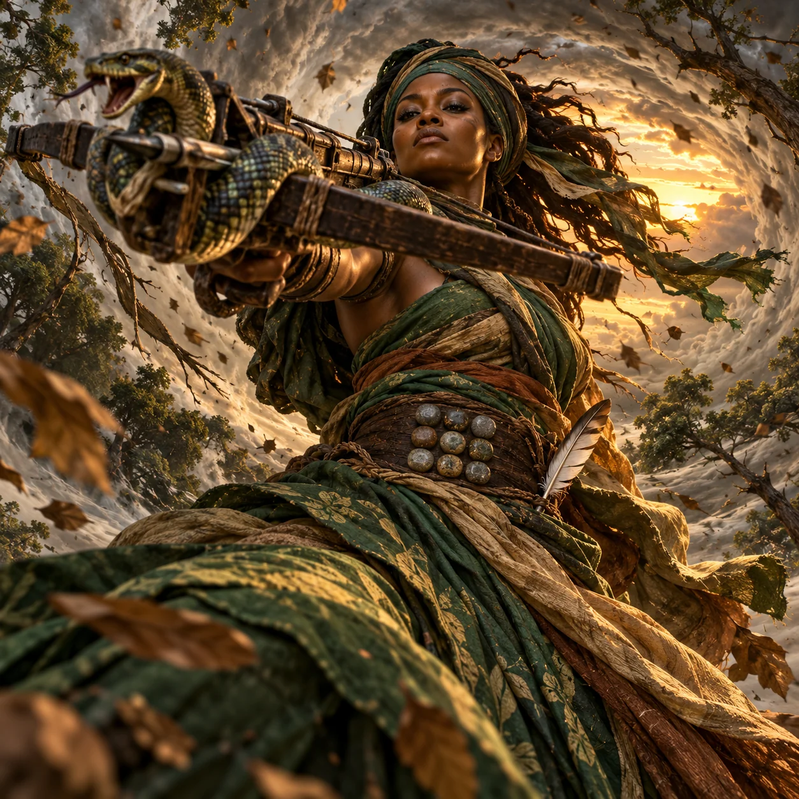
Reverent female warrior with serpent crossbow, quill and nine stones in forest tornado eye.
Aura: Air-domain tornado and fierce warrior bearing create awe [ayao-c01,ayao-c02].
Audit ciri dan sumber
- [object Object]
- [object Object]
- [object Object]
Native1254 and200px inspected: forceful serpent crossbow dominates, female warrior braces in physical forest tornado, quill and nine3x3belt stones readable native; all seven Sangar checks yes. Clothing opaque; no extra limbs,text,generic aura or unsupported giant scale.
Review sumberONE original square premium painterly cinematic Mitoloka illustration of Ayao, the revered Santería orisha of air and fierce warrior residing in forest and tornado eye.
ANATOMY: One dignified female warrior, one head, two eyes, two arms and two legs; fully opaque layered brown and green cloth; hold one substantial crossbow with a real serpent coiled along it, a quill tucked into the sash, exactly nine ordinary stones clearly set in a 3 by 3 arrangement on the broad belt. [ayao-c02,ayao-c03,ayao-c04]
MOMENT: Bracing forward within the eye of a violent tornado, lift the serpent crossbow toward the viewer, stern focused gaze; body and crossbow fill most of the image.
POWER: The air domain manifests as physical tornado wind around her, leaves and branches swept circularly around the calm eye, no magical lights. [ayao-c01]
SCALE & CAMERA: extreme low camera close framing and strong foreshortening; no giant body or people as scale markers.
LIGHT & WEATHER: one warm break of sunset through dark tornado cloud, strong rim light, deep shadows, airborne brown leaves.
SURFACE: heavy wind-whipped textured opaque cloth, worn wood crossbow, natural serpent scales, rough nine stones.
SETTING: dense forest in tornado eye. [ayao-c01,ayao-c11]
MOOD: reverent, awe-inspiring fierce warrior, overwhelming dignity and elemental presence.
HARD CONSTRAINTS: no text, lettering, logo, border or watermark; no extra heads limbs fingers; no film game anime comic design; no nudity or explicit gore; no generic glow aura neon outline energy ribbons; no crown or imported religious iconography; keep all nine belt stones distinct.
Aziza (mythology)
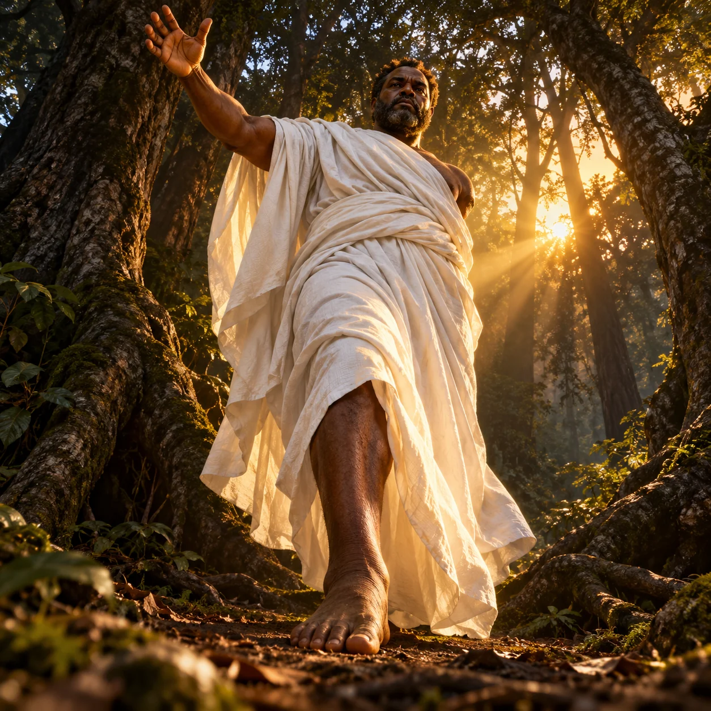
Urhobo one-armed, one-legged white-clothed forest deity heralding dawn.
Aura: One-arm/one-leg anatomy and dawn herald forest sovereignty create reverent awe [aziza-mythology-c13,aziza-mythology-c16,aziza-mythology-c17].
Audit ciri dan sumber
- [object Object]
- [object Object]
- [object Object]
- [object Object]
Native1254 and200px inspected: only one arm rises in proclamation; absent opposite arm shoulder visible; one central leg and foot in stride, white opaque robe. Strong low perspective and dawn forest sovereignty reverent. All seven Sangar checks yes; no unsupported supernatural effects or giant scale.
Review sumberONE original square premium painterly cinematic Mitoloka illustration of Aziza in the specific Urhobo deity variant, king of the forest and herald of dawn; do not mix with the small Fon fairy race.
ANATOMY: A large strongly built adult man with exactly ONE arm, ONE hand, ONE leg and ONE foot, one head, two eyes. His other shoulder ends naturally with no second arm, his hip has only a single central leg. Fully opaque white cloth robe with a clearly open silhouette around the lone leg, bare single foot; no stump gore. [aziza-mythology-c13,aziza-mythology-c14]
MOMENT: Stride toward the viewer from between dark forest roots on the single leg, lift his only arm in a forceful proclamation of dawn; intense dignified downward gaze.
POWER: Dawn breaks physically across his white cloth and the trees; no magical attack or glow, no earthquake. He is dawn herald and forest king. [aziza-mythology-c16,aziza-mythology-c17]
SCALE & CAMERA: extreme low angle near ground, close full body filling 85 percent of square, big human proportions but no invented giant scale; lone foot and arm fully visible.
LIGHT & WEATHER: one narrow warm rising-sun beam, deep walnut forest shadows, crisp rim light, ordinary early morning haze.
SURFACE: rough tree bark, woven white cloth, weathered human skin.
SETTING: forest of the Urhobo tradition. [aziza-mythology-c17]
MOOD: revered and awe-inspiring, morally judging supernatural forest sovereign, not evil or grotesque. [aziza-mythology-c15]
HARD CONSTRAINTS: no second arm or second leg, no hidden extra limbs, no crutch, no weapon, no crown, no halo, no imported iconography, no text logo border watermark; no film game anime comic design; no nudity gore generic glow neon energy ribbons.
Baccoo
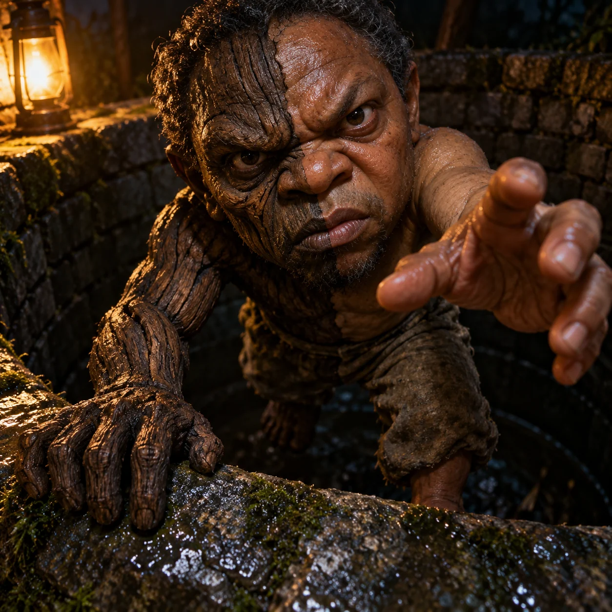
Large-headed half-wood half-flesh short dwarf clambering from a haunted well.
Aura: Large head and contrasting living wood/flesh body emerging from haunted well create menace [baccoo-c02,baccoo-c23,baccoo-c24,baccoo-c25].
Audit ciri dan sumber
- [object Object]
- [object Object]
- [object Object]
Native1254 and200px inspected: angry large-headed dwarf clambers toward viewer over well, center seam half living wood/half flesh clear, wooden five-digit hand grips stone and flesh hand reaches. Close well brick scale preserves short stature. All seven Sangar checks yes; intact skin/no gore, no magical effects,text,borrowed design.
Review sumberONE original square premium painterly cinematic Mitoloka illustration of Baccoo, a short Guyanese-Surinamese supernatural dwarf with half-wood half-flesh body.
ANATOMY: One oversized head, two eyes, two arms, two legs; the entire left half from face to left hand and left foot is solid dark cracked wood with clear grain, right half is intact living flesh. Distinct center seam, no gore or exposed meat. Short adult dwarf stature, no kneecap bumps on the smooth knee joints, thick opaque worn trousers. [baccoo-c02,baccoo-c04,baccoo-c18,baccoo-c23]
MOMENT: Clamber suddenly over the near rim of a haunted old well toward the camera, wooden hand gripping the wet stone rim, flesh hand reaching confrontationally, oversized face in hostile close-up after being disturbed. [baccoo-c24,baccoo-c25]
POWER: no documented visible power used; menace through unnatural wooden half-body and sudden physical emergence only. No conjured fire or flying rocks.
SCALE & CAMERA: extreme low close camera at well rim, short dwarf dominates the square by framing, nearby well bricks show small actual stature; no giant size.
LIGHT & WEATHER: single warm lantern light from outside the picture, deep charcoal shadows below the rim, slight natural moisture.
SURFACE: split rough wood grain versus intact weathered skin, damp coarse cloth and moss-darkened well stones.
SETTING: old haunted well. [baccoo-c24]
MOOD: deeply unsettling, imposing physical lunge, hostile after disturbance, never cute or puppetlike.
HARD CONSTRAINTS: no text logo border watermark; no extra heads limbs fingers; no film game anime comic reference; no pointed elf ears, horns, fangs or claws; no nudity explicit gore; no generic glow aura neon outline energy ribbons; wood half is living body not armor or attached planks.
Banjhakri and Banjhakrini
Menunggu gambar yang lolos audit
Batutut
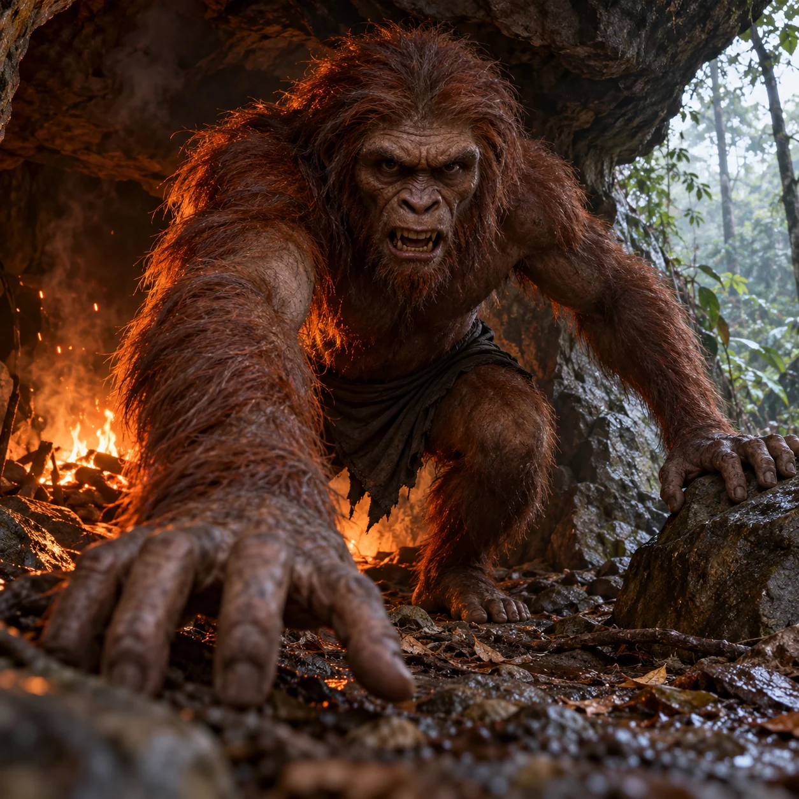
Reddish-haired heavy-browed simian forest humanoid lunging from a fire-lit cave.
Aura: Aggressive lunge, long arms, heavy brow and fire-used cave presence create menace [batutut-c03,batutut-c08,batutut-c09].
Audit ciri dan sumber
- [object Object]
- [object Object]
- [object Object]
Native1254 and200px inspected: heavy-brow reddish-haired simian humanoid lunges from fire-lit cave, long muscular arms and broad torso clear, foreground hand imposing; natural fire separate from body. One head/two arms/two legs, no giant cues; all seven Sangar checks yes. Lower wrap opaque, no text or fantasy aura.
Review sumberONE original square premium painterly cinematic Mitoloka illustration of Batutut / Nguoi Rung, the not-quite-human not-quite-ape forest cryptid of Vietnam.
ANATOMY: One upright simian humanoid, one head two deep-set eyes under a prominent heavy brow, long muscular arms, broad shoulders and heavy torso; reddish-brown hair covers the body. Two arms with ordinary five-digit hands, two legs and broad humanoid feet. About five feet tall in this eyewitness variant, NOT a giant. Opaque dark lower wrap for modesty. [batutut-c04,batutut-c05,batutut-c08]
MOMENT: Burst from crouch out of a rocky cave toward the viewer, one long arm thrust forward, other hand braced on rock, face snarling aggressively, heavy brow sharply visible. [batutut-c03,batutut-c09]
POWER: A small real fire that the creature can use burns on cave floor behind it, orange embers rise naturally, no fire conjured from hands or body. [batutut-c03]
SCALE & CAMERA: extreme low camera on cave floor, close foreshortened long arms and broad shoulders fill the square; ordinary rock sizes, no giant scaling.
LIGHT & WEATHER: one low fire source behind and to side, copper rim light on reddish hair, heavy shadow, physical thin smoke only from campfire.
SURFACE: coarse damp reddish-brown hair, weathered simian skin, gritty rocks, ash.
SETTING: cave opening into northern Vietnamese forest. [batutut-c01,batutut-c03,batutut-c04]
MOOD: sudden dangerous aggressive encounter, supernatural forest humanoid, never ordinary gorilla or calm Bigfoot portrait.
HARD CONSTRAINTS: no text logo border watermark; no extra heads limbs fingers; no film game anime comic design; no horns tusks or claws; no weapons, no nudity explicit gore; no generic glow aura neon energy ribbons.
Beast of Bont
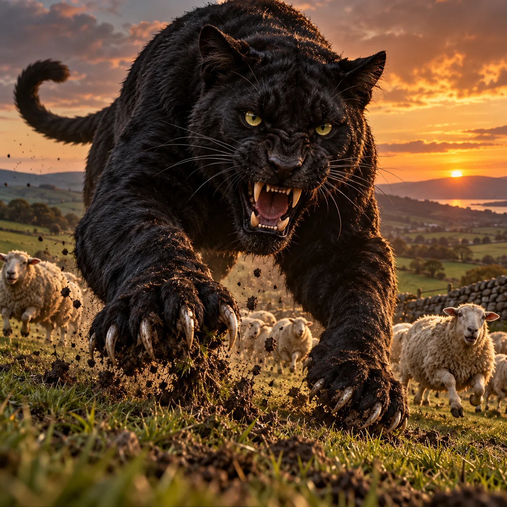
Enormous black pantherlike cat leaping from a Welsh sheep field at dusk.
Aura: Reported enormous black cat attacking livestock becomes a close predatory leap [beast-of-bont-c01,c02].
Audit ciri dan sumber
- [object Object]
- [object Object]
- [object Object]
Native1254 and200px inspected: enormous black feline leaps at viewer, claws and jaws readable, nearby intact sheep establish documented scale, turf tossed physically, Welsh dusk field. All seven Sangar checks yes; no supernatural power, gore,text,extra heads or limbs.
Review sumberONE original square premium painterly cinematic Mitoloka illustration of the Beast of Bont / Bwystfil Bont, an enormous black cat reported attacking livestock in Ceredigion Wales at dusk.
ANATOMY: One giant black pantherlike cat, one head, two eyes, four legs, one long feline tail; black fur, powerful feline jaws and ordinary cat teeth, muscular shoulders and visibly extended feline claws. No horns, wings, magical anatomy. [beast-of-bont-c01,beast-of-bont-c02]
MOMENT: Spring forward toward the viewer from a Welsh sheep field, open snarling jaws and both leading paws reaching, massive shoulders dominating; intact frightened sheep scatter just behind the paws. [beast-of-bont-c01]
POWER: No documented supernatural power. Physical cat leap kicks turf and loose earth naturally; no glow, no magic, no blood.
SCALE & CAMERA: extreme low ground-level camera, beast fills most of square, nearby sheep beneath shoulder height demonstrate the reported enormous cat size; avoid planet-sized monster.
LIGHT & WEATHER: one dying warm dusk horizon, high contrast rim light on black fur, deep walnut shadows and disturbed earthy dust.
SURFACE: rough damp black fur, muddy claws and paws, torn turf.
SETTING: farm field in Ceredigion Wales as dusk falls, modest stone boundary at edge, no fancy fortress. [beast-of-bont-c01]
MOOD: predatory dangerous livestock attacker, unmistakably imposing cryptid action, not an ordinary cat at pasture.
HARD CONSTRAINTS: no text logo border watermark; no extra heads limbs tails; no film game anime comic designs; no nudity or gore; no damaged sheep or carcasses; no glowing eyes aura neon energy ribbons.
Behigorri
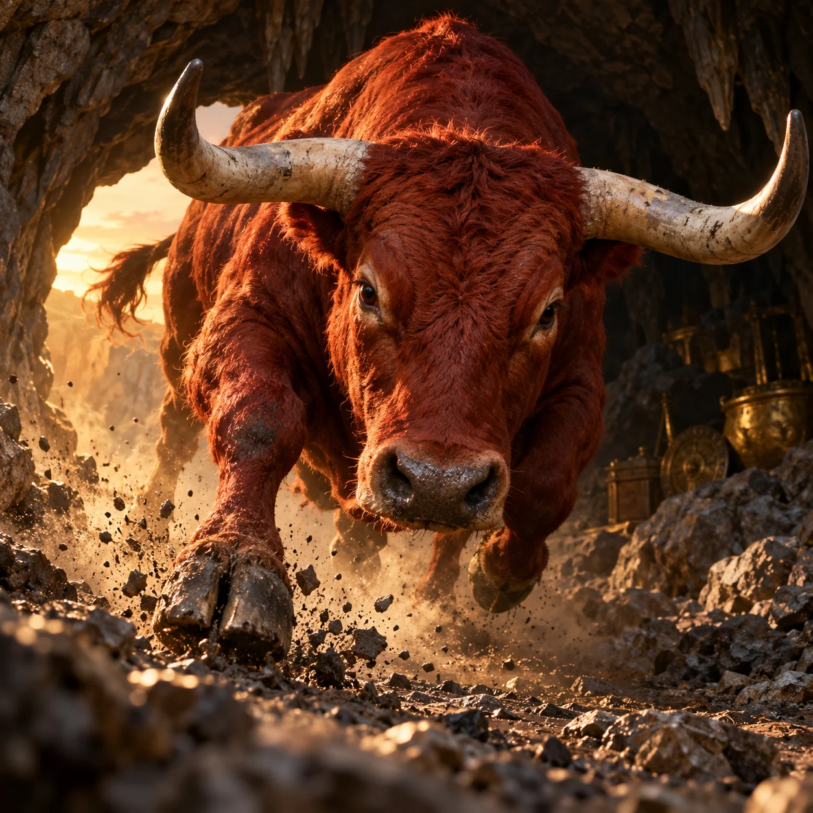
Natural red bull variant charging from a cave sanctuary as guardian.
Aura: Confrontational cave-defense charge and red bull silhouette create guardian force [behigorri-c07,c08].
Audit ciri dan sumber
- [object Object]
- [object Object]
- [object Object]
Native1254 and200px inspected: red bull charges cave threshold toward viewer horns lowered, cloven front hoof scrapes gravel, sacred treasure hints behind. No ordinary calm dairy cow, no collar. Natural bovine anatomy and physical dust only; all seven Sangar checks yes; no giant cues or magic.
Review sumberONE original square premium painterly cinematic Mitoloka illustration of Behigorri, the Basque underground sanctuary guardian in its documented red bull variant.
ANATOMY: One living muscular red-coated bull resembling wild Basque betizu cattle, one head, two natural eyes, two ordinary bovine horns, four cloven-hoofed legs, one tail. Deep red-brown hide, no monster mutations or giant anatomy. [behigorri-c02,behigorri-c07,behigorri-c08]
MOMENT: Charge violently out of the cave toward an approaching intruder at the viewer position, head lowered horns forward, forelegs thrusting and hooves scraping rocky threshold. Cave mouth frames the red head and shoulders; no static cow in a field. [behigorri-c07]
POWER: physical guardian charge only, scattering loose cave gravel; no documented supernatural visible effects, no fire or glowing eyes.
SCALE & CAMERA: extreme low ground-level camera close to rushing horns, strong foreshortening fills square, natural cattle scale, no tiny people or invented giant height.
LIGHT & WEATHER: one low late sunset beam entering cave from outside, warm copper rim light, black cavern shadows, disturbed mineral dust.
SURFACE: rough red cattle hair, wet nostrils, scuffed pale natural horns, mud on cloven hooves, jagged cave stone.
SETTING: underground cave sanctuary housing Mari's mythical treasures, a few subdued ordinary old gold objects deep behind creature rather than a spectacular treasure fantasy. [behigorri-c01,behigorri-c08]
MOOD: reverent yet terrifyingly forceful sacred guardian confronting trespass, dangerous and imposing living being.
HARD CONSTRAINTS: no text logo frame border watermark; no extra heads limbs horns; no film game anime comic design; no nudity gore; no wings flaming horns glowing aura neon energy ribbons; not a calm dairy cow, no bell or collar.
Binbōgami
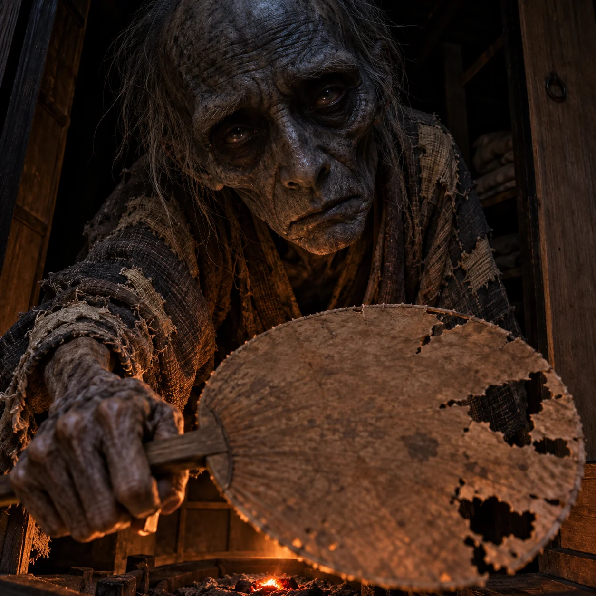
Hollow-eyed aged household kami emerging from closet with torn persimmon fan as hearth dies.
Aura: Sunken-eyed kami arrival from closet at dying hearth and iconic torn fan create solemn awe [binbogami-c04,c14,c17,c18].
Audit ciri dan sumber
- [object Object]
- [object Object]
- [object Object]
Native1254 and200px inspected: dark bluish hollow-eyed aged kami looms sorrowfully from closet, correct fixed round torn shibu-uchiwa thrust toward lens, dying hearth below. Uncanny rather than ordinary elder, reverent sorrow preserved; all seven Sangar checks yes. No magic effects/giant scale/text/extra limbs.
Review sumberONE original square premium painterly cinematic Mitoloka illustration of Binbōgami, the Japanese kami that settles in a house and brings poverty.
ANATOMY: One very thin aged man like a shabby beggar monk, deeply BLUE-BLACK cadaverously pale face, eyes extremely deeply recessed into hollow sockets, emaciated old cheekbones, dirty wrinkled skin, sorrowful solemn confronting expression. One head two eyes two arms two legs, fully opaque coarse patched robe. Hold a large torn brown SHIBU-UCHIWA: one FIXED flat round paper fan on a rigid wooden handle, visibly ragged holes and torn edges, NOT a folding fan, no pleated ribs, no text. [binbogami-c14,binbogami-c18]
MOMENT: Surge from the darkness of the household closet as the hearth's final ember dies, lean his blue-black hollow-eyed HEAD right down over the viewer until it fills the upper two thirds, his skeletal hand reaches past the lens gripping the rigid round fan, sorrowful direct gaze with overwhelming divine weight. This is the uncanny arriving household kami, not a strolling elderly person. [binbogami-c04,binbogami-c17]
POWER: No documented physical visual manifestation of impoverishing power. The hearth ember is naturally dying, no stolen coins, no invented aura, no magic blast. [binbogami-c17]
SCALE & CAMERA: EXTREME LOW CLOSE-UP inches from his blue-black face, deep hollow eyes loom in upper two thirds, correct torn ROUND fixed fan lower foreground, shoulders and thin arms foreshortened; normal human stature with no giant scaling.
LIGHT & WEATHER: one weak warm dying ember light from below makes face and torn fan stark, near-black closet behind, heavy low-key shadows; no colored luminous mist.
SURFACE: rough patched fabric, leathery aged skin, brittle torn paper fan, soot-black hearth, worn closet wood.
SETTING: impoverished Japanese house interior, dark closet near extinguishing irori hearth. [binbogami-c04,binbogami-c17]
MOOD: reverent awe, sorrowful uncanny supernatural arrival, overwhelming grim presence, not evil snarling monster and not cute or comical.
HARD CONSTRAINTS: no text lettering logo border watermark; no extra heads limbs fingers; no film game anime comic design; no horns claws fangs or crown; no nudity gore; no generic glow aura neon energy ribbons, no flying coins.
Bitard
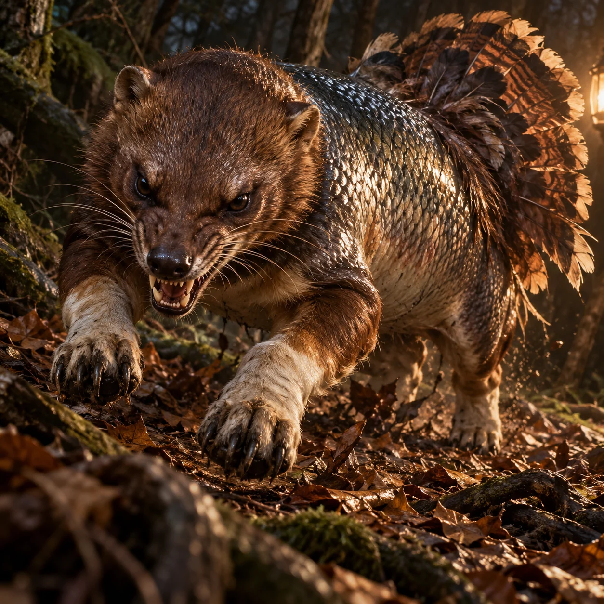
Original marten-headed salmon-bodied basset-legged turkey-plumed creature escaping a forest hunt.
Aura: Unusual marten/salmon/basset/turkey composite in urgent forest movement creates awe [bitard-c03,c04].
Audit ciri dan sumber
- [object Object]
- [object Object]
Native1254 and200px inspected: tense narrowed-eye marten head with defensive snarl, fish-scaled salmon body, short basset-type legs and turkey feather rump; forceful fleeing bound, no puppy smile. Four legs expected with far rear partly occluded, no extra limbs. All seven Sangar checks yes; no magic/text/giant scale. Attempt01 cute rejected archived.
Review sumberONE original square premium painterly cinematic Mitoloka illustration of Bitard in its ORIGINAL documented chimeric variant, a mythic creature of Ligugé forest near Poitiers.
ANATOMY: One sharply elongated WILD MARTEN head with pointed narrow muzzle, two SMALL DARK narrowed predator eyes under tense brows, small rounded ears pinned back, a continuous elongated SALMON fish body with overlapping wet silvery dark scales, FOUR short sturdy BASSET HOUND legs with canine paws emerging from underside, rump feathered with TURKEY plumes forming one ragged fan. Natural hybrid joins, no human body, no hare legs, no peacock feathers, no academic necklace in this original variant. [bitard-c03]
MOMENT: Bound abruptly from dark roots toward and past the viewer escaping a forest hunt, marten muzzle tightens into a defensive feral snarl with ordinary needlelike marten teeth visible, mouth tense not smiling, front two basset paws lifted and rear legs pushing, turkey rump feathers flare. [bitard-c04]
POWER: no documented power; creature's uncanny anatomy, forceful motion and light alone. No magic or invented attack.
SCALE & CAMERA: extreme low close view from damp ground, harsh foreshortened marten muzzle and fish-scaled shoulders occupy foreground, creature fills 95 percent of square through framing, no invented giant size, all four short canine legs legible.
LIGHT & WEATHER: single warm lantern beam from hunter just out of frame reveals fish scales and marten eyes, deep brown forest shadows, disturbed dry leaves. [bitard-c04]
SURFACE: marten coarse fur, slick salmon scales, rough short-legged dog fur, layered turkey feathers, moist leaf litter.
SETTING: dark Ligugé forest near Poitiers; fallen roots and leaf litter. [bitard-c01,bitard-c04]
MOOD: awe at strange semi-divine chimera, forceful and unsettling encounter, NO cute mascot, NO big round adorable eyes, NO happy expression, NO plush puppy proportions or jokey costume.
HARD CONSTRAINTS: no text logo border watermark; no extra heads legs or tails; no film game anime comic design; no horns wings fire or glowing eyes; no gore; no generic glow aura neon energy ribbons; exactly original variant marten/salmon/basset/turkey.
Biwa-bokuboku
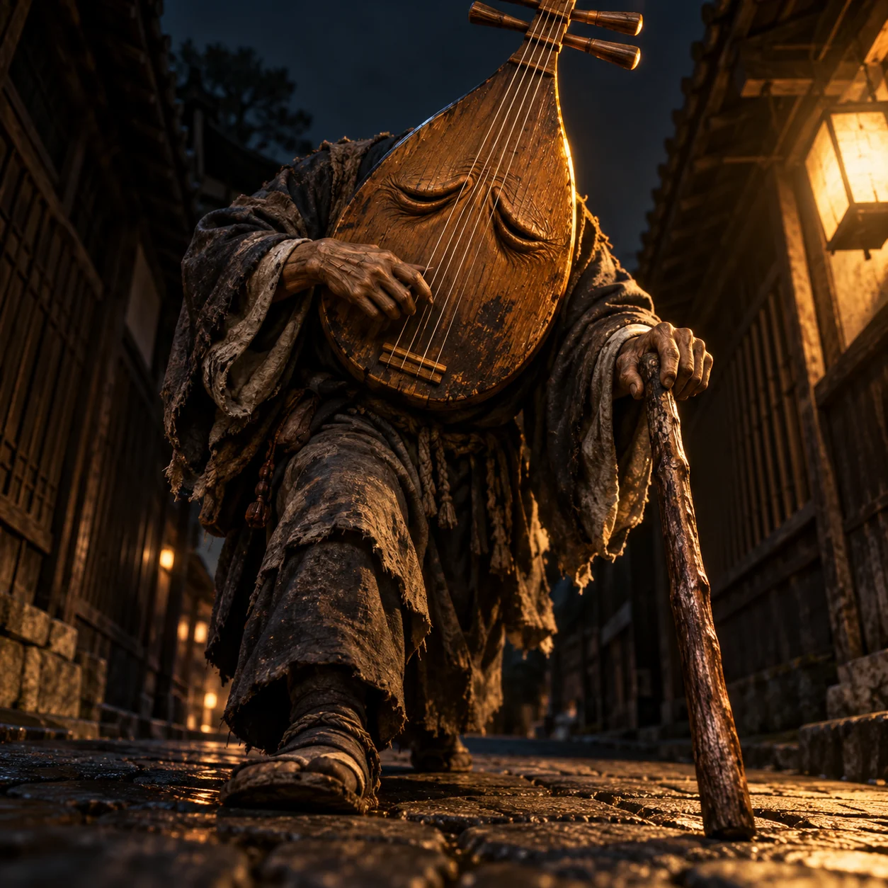
Lute-headed blind-priest-shaped tsukumogami walking with cane while playing its own strings.
Aura: Unmistakable lute-only head and self-playing string action create awe [biwa-bokuboku-c02,c06,c12,c16].
Audit ciri dan sumber
- [object Object]
- [object Object]
- [object Object]
Inspected native 1254x1254 PNG and separately rendered 200px thumbnail. All seven Sangar checks pass: instrument-headed body dominates at low angle; two closed wooden eyelids, one biwa head, two arms/two legs and cane; forward walking stride and fingers on strings convey self-playing. Strong looming uncanny presence at 200px, without cheerful smile. No invented magical effect, text or gore. Human scale retained through close camera. Robe remains opaque.
Review sumberONE original square premium painterly cinematic Mitoloka illustration of Biwa-bokuboku, an old biwa lute that has grown a human body and roams playing its own music.
ANATOMY: One HUMAN-SHAPED body in fully opaque weathered blind-priest robe, two arms two legs, its ONLY HEAD is an upright SHORT-NECKED WOODEN BIWA LUTE with broad pear-shaped soundboard, wooden neck and tuning pegs. Exactly TWO tightlyclosed mournful eyes incorporated into the lute soundboard, with deep downwardfurrows; NO smilingmouth, no decorativeface, no extra facialslits or eye-likesoundholes, no separate human head or human face mask. One hand grips one cane, other hand plucks the real strings of its own lute-head. [biwa-bokuboku-c02,biwa-bokuboku-c06,biwa-bokuboku-c11,biwa-bokuboku-c16]
MOMENT: Step toward viewer along a dark street while playing its own head strings, lean heavily over planted cane, closed eyes and severe downward mournful furrows in oldwood, NO smile or cartoonmouth; robe swings with walking stride. [biwa-bokuboku-c03,biwa-bokuboku-c12]
POWER: The instrument plays itself; show physical strings being plucked, no floating musical notes, sound blasts or invented magic. [biwa-bokuboku-c12]
SCALE & CAMERA: extreme low close street-level camera, lute head and cane-hand fill most of square, normal human proportions and scale, clearly an animated musical object rather than ordinary person.
LIGHT & WEATHER: one warm street lantern from outside frame, severe rim light on varnished wood, black alley shadows; dry still night without unsupported storm.
SURFACE: scratched aged wooden soundboard, taut strings, worn tuning pegs, coarse opaque dark robe, weathered wooden cane, rough street stones.
SETTING: Japanese street at night. [biwa-bokuboku-c03,biwa-bokuboku-c12]
MOOD: A disturbing imposing silentnightencounter with an unmistakablyliving instrument, severe archaic mournful woodenhead looming down overviewer; awe-inspiring uncanny lamenting animated instrument, overwhelming strange presence; sorrowful not evil, never cute or festive mascot.
HARD CONSTRAINTS: no text lettering logo border watermark; one lute-head only, no separate human head, no extra limbs fingers; no film game anime comic design; no nudity gore; no glowing aura neon energy ribbons magical music notation.
Bláinn
Menunggu gambar yang lolos audit
Blue Mountains panther
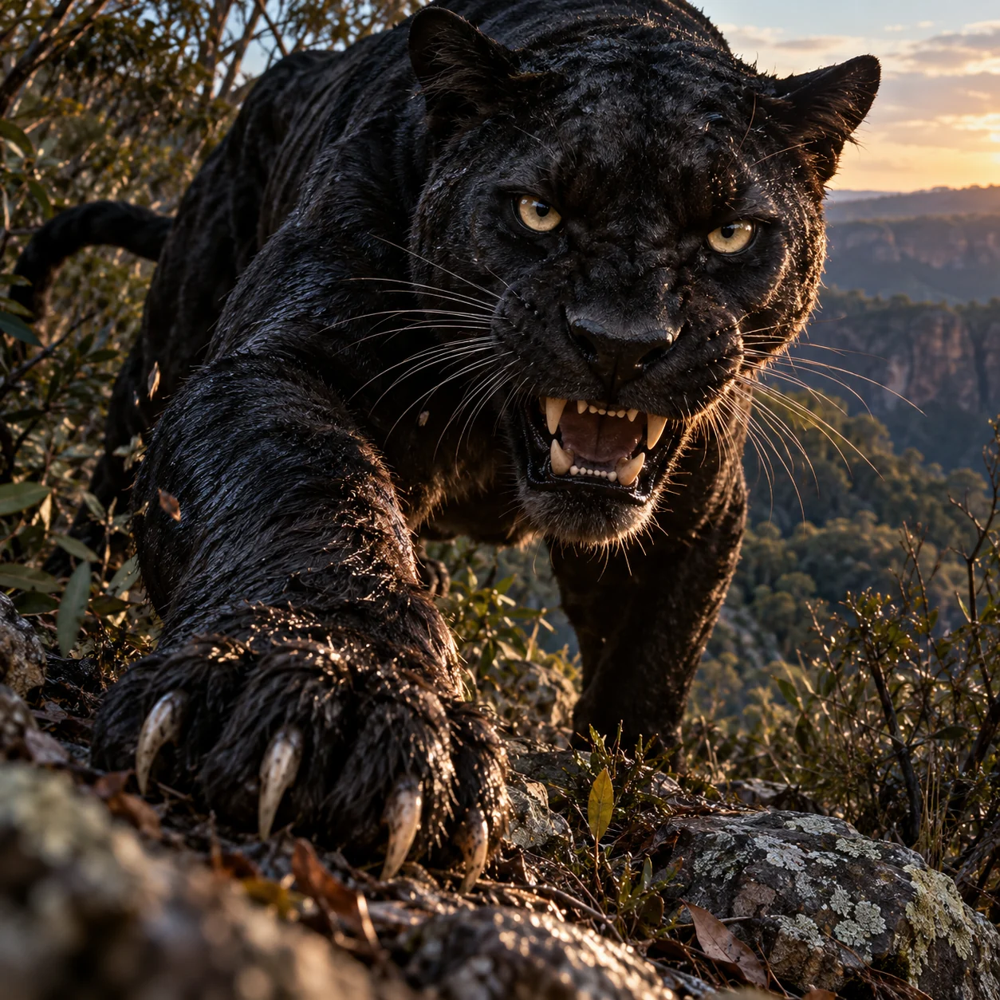
Black large-cat cryptid emerging into an intimate Blue Mountains bush encounter.
Aura: Black big-cat anatomy and sudden close encounter create danger [blue-mountains-panther-c01,c10].
Audit ciri dan sumber
- [object Object]
- [object Object]
- [object Object]
Inspected native 1254x1254 PNG and separate 200px thumbnail. All seven Sangar checks pass: black feline fills frame, bared natural teeth, intense direct gaze and forward foreshortened clawed paw create an immediate dangerous encounter at 200px. One head/two eyes, two forelegs visible, hindquarters partly occluded, one tail; no extra anatomy. Blue Mountains scrub and rock setting is secondary. No magical effects, glow, victim, text, watermark or gore. Normal large-cat scale maintained.
Review sumberONE original square premium painterly cinematic Mitoloka illustration of the Blue Mountains panther, the black big-cat cryptid reported in close encounters west of Sydney.
ANATOMY: One BLACK pantherlike large feline of ordinary large-cat size, one head two natural eyes four legs one long feline tail, heavy broad feline muzzle, black coarse fur, natural claws and teeth. Not a giant and no invented monster anatomy. [blue-mountains-panther-c01,blue-mountains-panther-c10]
MOMENT: Emerge abruptly from dense dark scrub right into a close encounter, front paw swings toward the viewer as its head turns with bared ordinary feline teeth and intense direct gaze; shoulder muscles compressed in a forceful step. No victim or invented livestock attack. [blue-mountains-panther-c10]
POWER: no documented powers; danger comes from physical predatory feline anatomy, close encounter and light only. No magic effects.
SCALE & CAMERA: extreme low camera inches above rocky ground, very close head-and-front-paw composition with shoulder behind, panther occupies 90 percent of square, no giant-size markers.
LIGHT & WEATHER: one low dying sun beam just catches jaw and paw edges, deep black bush shadows; a few leaves displaced by physical passage.
SURFACE: wet-looking rough black fur, scuffed claws, textured whiskers, stony soil and coarse brush.
SETTING: Blue Mountains bush terrain west of Sydney, only small scrub-and-rock hints behind the dominant creature. [blue-mountains-panther-c01]
MOOD: dangerous imposing sudden big-cat encounter, never ordinary zoo animal posed for portrait or calm animal resting.
HARD CONSTRAINTS: no text logo border watermark; no extra heads limbs tails; no film game anime comic design; no horns wings flames or giant size; no gore; no glowing eyes generic aura neon energy ribbons.
Boto (Bufeo Colorado)
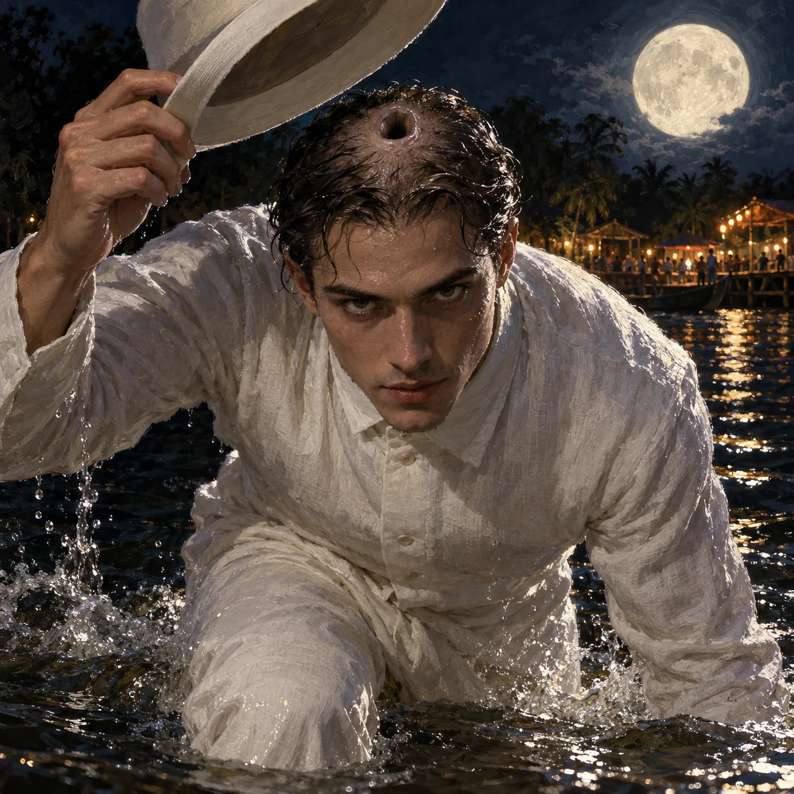
White-clothed transformed man exposing retained crown blowhole while emerging from Amazon shallows at full-moon festival.
Aura: Retained dolphin blowhole on human head revealed in river emergence provides source-specific uncanny force [boto-c05,c06,c07].
Audit ciri dan sumber
- [object Object]
- [object Object]
- [object Object]
Inspected native 1254x1254 PNG and separate 200px thumbnail. All seven Sangar checks pass: imposing bent-forward human form fills frame, direct severe gaze and clearly open dark breathing hole in intact crown are visible at 200px. Hat removal and step from river provide action. One human head/two eyes/two arms/two legs; legs and lowered hand partly underwater or cropped. White shirt is fully opaque, buttoned and painterly. Full moon/riverside festival and physical splash derive from c07/c08. No invented dolphin face/fins/tail or magic energy; no text/watermark/gore. Retained blowhole makes him unmistakably uncanny rather than ordinary human.
Review sumberONE original square premium painterly cinematic Mitoloka illustration of Boto in the documented transformed HUMAN form, Amazon river dolphin shapeshifter arriving at a riverside full-moon festival.
ANATOMY: One handsome elegant pale-skinned young adult man dressed in a thick heavy double-layer WHITE linen shirt BUTTONED UP TO THE COLLARBONE and thick white trousers: cloth must stay fully opaque, with NO visible torso skin through the shirt, one human head two eyes two arms two legs. CRUCIAL: a real DOLPHIN BLOWHOLE remains at the TOP OF HIS HUMAN HEAD: a dark oval breathing opening in intact smooth crown skin, NOT a wound, no blood, not a third eye. Hold his plain white hat lifted above the head so blowhole is fully exposed and clearly legible. [boto-c04,boto-c05,boto-c06,boto-c07,boto-c08]
MOMENT: Emerge forcefully from Amazon river shallows toward the viewer, lean his head forward as he lifts the hat in response to the festival request; his uncanny blowhole and penetrating direct gaze dominate the near foreground. Opaque dry heavyweight cloth above water; small droplets only, no translucent soaked shirt. [boto-c06,boto-c07]
POWER: Documented shapeshifting has just produced the human body while leaving the dolphin breathing opening, physical water splashes around his step. NO hybrid dolphin face, fins or fish tail, no magical aura. [boto-c05,boto-c07]
SCALE & CAMERA: extreme low intimate camera at waterline but man bends crown toward camera to make TOP HEAD BLOWHOLE visible. Close half-body fills 90 percent of square; human scale, no giant cues.
LIGHT & WEATHER: one full moon dominates light, narrow silver-white rim on thick opaque clothing and dark half-face shadows, deep warm river shadows; physical splashes only.
SURFACE: intact smooth crown with natural dark blowhole, thick rough opaque white linen, no transparent fabric, water droplets, plain felt hat.
SETTING: Amazon riverside under full moon; a few subdued community festival lights far behind without distracting extra people. [boto-c01,boto-c07,boto-c08]
STYLE: visibly painterly brush texture, cinematic low-key chiaroscuro, avoid glossy photography.
MOOD: compelling uncanny shapeshifter encounter, unsettling imposing gaze, not ordinary gentleman portrait or cute dolphin; no sexual scene.
HARD CONSTRAINTS: no text logo border watermark; no extra heads limbs fingers; no film game anime comic designs; no nudity gore; blowhole is anatomical breathing opening NOT bloody injury; no generic glow aura neon energy ribbons; NO dolphin face or tail on the human variant; exposed blowhole must dominate visual recognition.
Bownessie
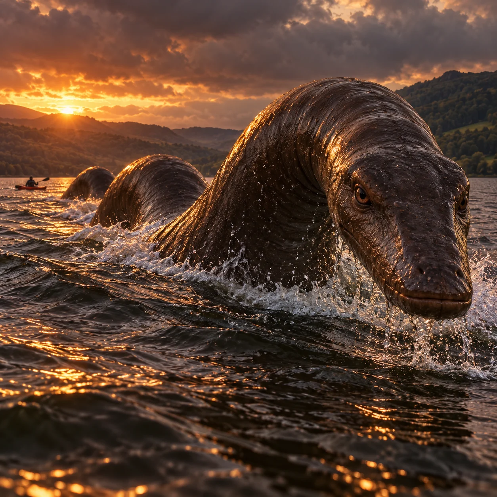
Dark seal-skinned multi-humped sea-serpent variant moving close through Windermere.
Aura: Source-reported three-car-length seal-skinned multi-humped body passing close creates awe [bownessie-c03,c07].
Audit ciri dan sumber
- [object Object]
- [object Object]
- [object Object]
Native1254 and200px examined: imposing close serpent head, straight closed mouth and two eyes, continuous multi-humped dark seal-skinned body with no extra limbs; physical wake/spray only, Windermere hills+small kayak scale. Seven Sangar checks pass; 01 archived for cute seal face.
Review sumberONE original square premium painterly cinematic Mitoloka illustration of Bownessie, the reported giant dark-brown snake-shaped multi-humped lake monster of Windermere.
ANATOMY: ONE continuous dark brown nearly black serpentine body, approximately THREE CAR LENGTHS long, multiple large rounded back humps arch above surface, smooth wet SEAL-LIKE skin not armored scales. One unmistakably SERPENT head: long narrow wedge-shaped muzzle with a perfectly straight horizontal shut mouth, two small deep-set watchful reptilian eyes under low brows; severe alien stare directly into viewer. Seal-like refers ONLY to smooth skin, NEVER seal face; no smile, no rounded cheeks, no button nose, no whiskers. Closed mouth, no horns frills mane claws or limbs, no plesiosaur flippers in chosen sea-serpent variant. [bownessie-c03,bownessie-c07]
MOMENT: Surge physically from left toward right through lake water, nearest massive back curve and head swing very close to viewer, leave rolling displaced wake and spray; head turns toward camera without aggressive attack or biting. [bownessie-c07]
POWER: No documented magical power; displaced lake water arises only from recorded movement through water. No glowing mist or summoned storm.
SCALE & CAMERA: extreme low WATERLINE viewpoint, creature fills 85 percent square, head fills 40 percent of image foreground; three prominent body curves remain visibly connected via lower wet body, distant small kayak gives scale consistent with three-car-length report. [bownessie-c06,bownessie-c07]
LIGHT & WEATHER: one dim copper sunset break through dark cloud, strong warm rim on dark wet skin, deep brown lake shadows, physical spray and wake only.
SURFACE: smooth flexible dark seal-like skin with folds, wet sheen and clinging lake water; no crocodile plates or dragon texture.
SETTING: Windermere ribbon lake in Cumbria, modest wooded Lake District hills behind, not ocean or castle. [bownessie-c01,bownessie-c02]
MOOD: terrifying uncanny proximity without attack, overwhelming awe at strange immense cryptid presence, imposing uncanny lake encounter, not calm decorative landscape and not monster attack invented from source.
HARD CONSTRAINTS: one continuous creature, no separate snakes, no extra heads limbs fins; no text logo border watermark; no film game anime comic design; no nudity gore; no dragon horns glowing eyes aura neon energy ribbons.
Buarainech
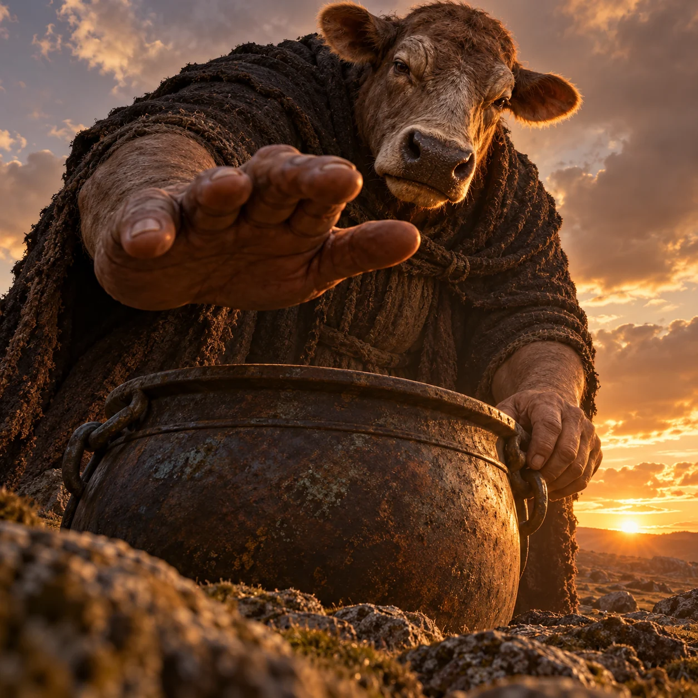
Cow-faced Fomorian giant leaning over and shielding the story-associated cauldron.
Aura: Documented giant scale and cow-faced head above cauldron create awe [buarainech-c03,c05,c06].
Audit ciri dan sumber
- [object Object]
- [object Object]
Native1254 and200px inspected. All7 Sangar checks yes: cow-faced giant fills square with huge reaching hand over cauldron, two eyes, no horns/hooves/cyclops, opaque cloak. Physical protective lean creates imposing action and documented cauldron context; no Balor deadly-eye transfer or magic FX. No text/mark/border; not ordinary cow or ordinary man.
Review sumberONE original square premium painterly cinematic Mitoloka illustration of Buarainech, the cow-faced primeval Irish Fomorian GIANT, father of Balor; do not give him his son's cyclops or lethal-eye traits.
ANATOMY: ONE gigantic human-shaped body with ONE distinctly COW-FACED head: broad bovine muzzle, wet dark cattle nostrils, gentle broad cattle ears, TWO ordinary eyes, no cyclops eye. Two humanlike arms and hands, two legs; fully opaque heavy coarse dark cloak and tunic. NO horns because only cow-FACE is documented, no cow hooves because humanoid giant form editorial. [buarainech-c03,buarainech-c06]
MOMENT: Lean forward massively over his cauldron, reach one huge humanlike hand toward the viewer as if shielding the vessel from being peered into, look down with grave dominant bovine face; other hand grips cauldron rim. [buarainech-c05]
POWER: no documented power of Buarainech depicted. No deadly eye ray; dangerous-gaze story belongs to BALOR. Only physical heavy body and immense hands, no magic fumes.
SCALE & CAMERA: extreme low viewpoint beside cauldron, cow face and giant hand dominate upper square, small normal-size cauldron beside hand makes documented GIANT stature apparent, not a normal cattle herder.
LIGHT & WEATHER: one low warm sunset source, deep walnut shadows and copper rim on muzzle and weathered metal; slight ordinary airborne dust only.
SURFACE: coarse bovine facial hair, wet nose, wrinkled giant hands, heavy opaque wool cloth, aged metal cauldron.
SETTING: restrained primordial Irish outdoor rocky ground, no palace or specific battle scenery; cauldron grounded in account. [buarainech-c03,buarainech-c05]
MOOD: awe-inspiring formidable ancient giant, not evil cow caricature, not ordinary human or animal; no comic expression.
HARD CONSTRAINTS: no text logo border watermark; no extra heads eyes limbs fingers; TWO eyes, no Balor traits; no horns, hooves, weapons or crown; no film game anime comic design; no nudity gore; no generic glow aura neon energy ribbons.
Bulgae
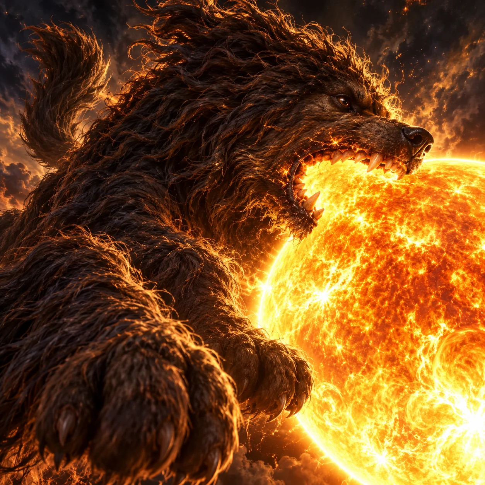
One gigantic shaggy fire hound biting Sun edge in the eclipse tale.
Aura: Gigantic fierce dog darkens Sun by bite, with unbearable solar contact heat [bulgae-c05,c07,c10].
Audit ciri dan sumber
- [object Object]
- [object Object]
- [object Object]
Viewed native 1254x1254 and true 200px thumbnail. Gigantic shaggy single dog fills frame in active solar bite; solar edge sits between upper and lower jaws and dark opaque muzzle/lower jaw interrupt disk edge. Fierce gaze, foreshortened canine paws, one tail, no extra visible anatomy. Sun-contact heat from c05 only; no flame breath or generic aura. Dark cosmic setting c04. All seven Sangar checks pass.
Review sumberONE original square premium painterly cinematic Mitoloka illustration of Bulgae, a gigantic fierce hairy fire hound from Korean kingdom of darkness, attempting to bite the Sun and cause eclipse.
ANATOMY: ONE giant shaggy dog, one head two natural fierce eyes four canine legs one furry tail, long tangled dark-brown dog hair, broad dog muzzle and ordinary dog teeth. No horns, wings, extra heads, dragon scales or claws beyond normal canine paws. [bulgae-c01,bulgae-c05,bulgae-c08]
MOMENT: BITE the SUN NOW, seen from the SIDE: the enormous dog head faces right and its upper jaw overlaps the top edge of the Sun while the lower jaw passes UNDER that same edge. A large curved section of the solar sphere is visibly INSIDE the dog's open mouth between upper and lower teeth. The nose projects past the solar edge. Forepaws thrust toward viewer, shaggy head fills upper half. The Sun's unbearable heat makes the dog recoil while gripping it. [bulgae-c05]
POWER: The black opaque jaws physically OCCLUDE a large wedge at the upper-left edge of the solar disk: obvious BLACK BITE NOTCH interrupting the round bright solar silhouette. The Sun cannot remain an intact unobstructed circle. The dog must grip its edge between top and bottom jaws, not snarl near it; actual fiery solar heat singes tips of fur around muzzle with small ember sparks and hot physical vapor, not body aura. No laser beams or flame breath. [bulgae-c05,bulgae-c07,bulgae-c10]
SCALE & CAMERA: extreme low close cosmic viewpoint from just below dog's forepaws, imposing gigantic dog dominates 80 percent square, Sun partially cropped at lower right, no tiny ordinary pet in huge empty sky.
LIGHT & WEATHER: the SUN is the ONLY dominant warm source, brilliant amber rim on dog hair and deep walnut-black silhouette; physically hot solar surface and small natural embers at contact.
SURFACE: tangled coarse dog hair, wet dark nose, natural teeth, rough singed fur tips; radiant tangible Sun surface.
SETTING: dark heavenly realms of Gamangnara story while chasing Sun, not an earthly kennel or forest. [bulgae-c04,bulgae-c05]
MOOD: dangerous overwhelming mythic cosmic hound in struggle, strong fierce expression, never cute playful pet.
HARD CONSTRAINTS: ONE dog and ONE Sun, no Moon in this variant; no text logo border watermark; no extra heads limbs wings; no film game anime comic design; no nudity gore; no glowing eyes, generic glow aura neon energy ribbons, no fire emitted from paws or breath.
Burha dangoria
Menunggu gambar yang lolos audit
Caacrinolaas
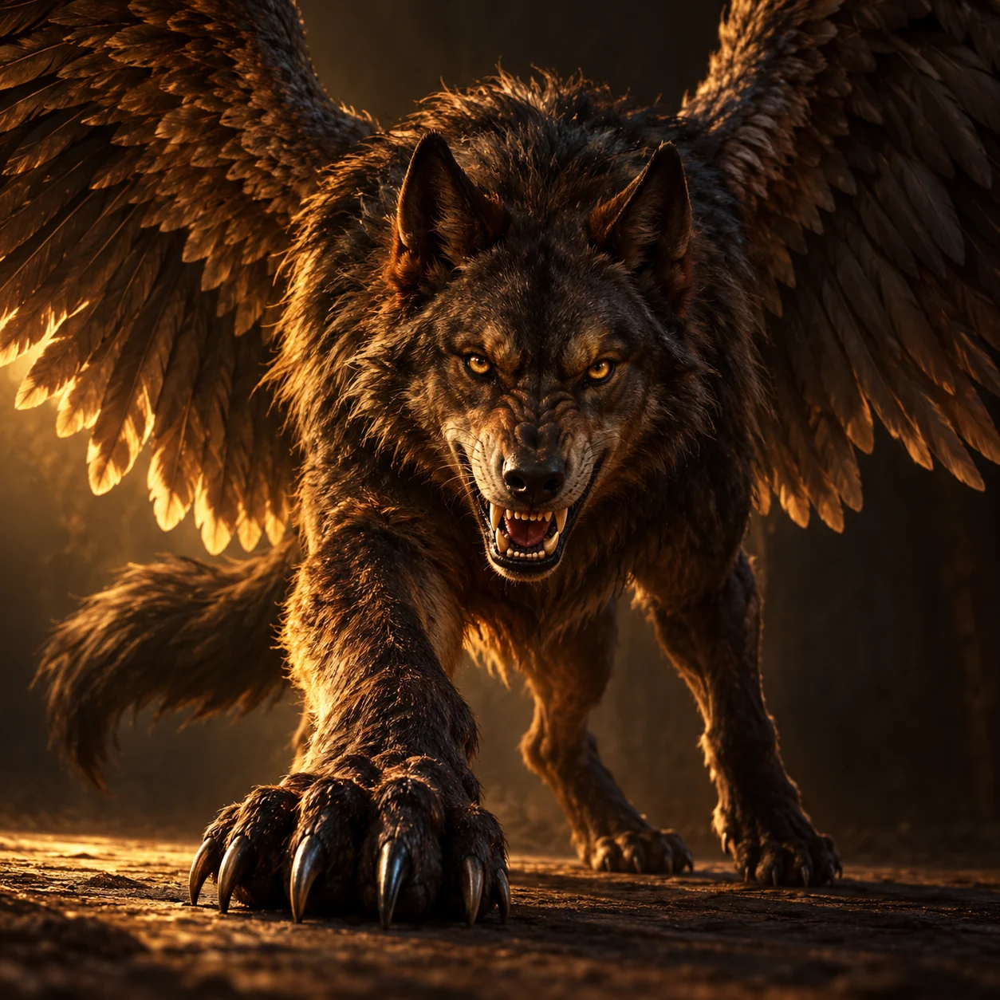
Canine infernal president advancing with paired feathered griffin wings.
Aura: Menace through winged dog form (c05/c06) and bloodthirsty infernal character (c02/c03).
Audit ciri dan sumber
- [object Object]
- [object Object]
Native and 200px inspected: paired feathered wings, canine head, four legs and forward planted-paw moment; all seven Sangar criteria pass.
Review sumberONE original square premium painterly cinematic Mitoloka illustration of Caacrinolaas, the infernal president who appears as a dog with griffin wings.
ANATOMY: one canine head, two eyes, four canine legs, canine paws and tail; exactly two huge feathered griffin wings visibly attached to the dog's shoulders, no horns, no human parts [caacrinolaas-c05, caacrinolaas-c06].
MOMENT: advance toward the viewer with a dog's aggressive gait, forepaw planting and wings sweeping outward, snarling jaws and intense direct eyes.
POWER: no abstract powers visualized; threat comes from the documented winged-dog form and bloodthirsty disposition [caacrinolaas-c02,c03]; no magic effects.
SCALE & CAMERA: extreme low camera close to the planted paw, tight foreshortened framing; no unsupported giant size; head and wings dominate.
LIGHT & WEATHER: one warm low sidelight cuts through deep shadow, sharp feather rim light; no fire or magical weather.
SURFACE: coarse dark canine fur, layered brown-black feathers, tactile claws and leathery nose.
SETTING: an unspecified dark infernal interior suggested by shadow alone [caacrinolaas-c01,c06]; no invented architecture, symbols or scenery.
MOOD: fiercely imposing and menacing, never cute or decorative.
HARD CONSTRAINTS: no text, lettering, logo, border, frame or watermark; no extra heads, limbs or fingers; no borrowed film/game/anime/comic design; no nudity or explicit gore; no glow aura, neon outline, energy ribbons, no bat wings.
Canterbury Panther
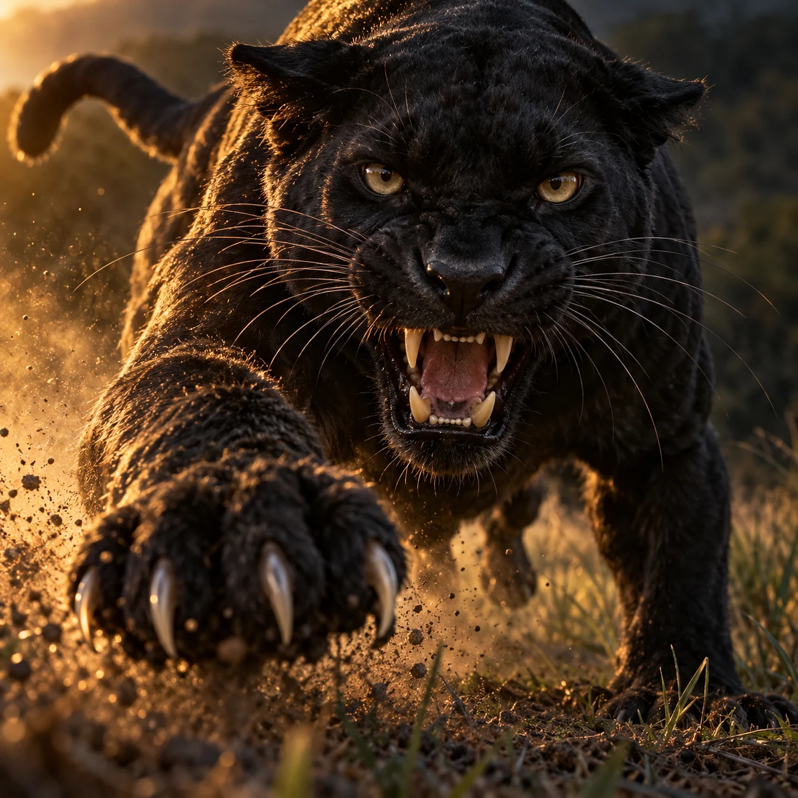
Reported black panther in a sudden predatory bound.
Aura: Predatory black panther close encounter grounded in c01, without supernatural effects.
Audit ciri dan sumber
- [object Object]
- [object Object]
Native and200px inspected: black panther lunges into camera with four feline legs, one tail, natural eyes, black fur. Dangerous close encounter all seven tests yes; dust is physical paw contact, no supernatural powers.
Review sumberONE original square premium painterly cinematic Mitoloka illustration of the Canterbury Panther, the reported black panther of Canterbury, New Zealand.
ANATOMY: one black big-cat head, two natural eyes, four feline legs, long feline tail, black fur, normal panther anatomy [canterbury-panther-c01].
MOMENT: bound directly at the viewer, shoulders contracted and one forepaw lunging toward camera, snarling jaws, ears flattened; make this a dangerous close encounter, not an animal calmly at pasture.
POWER: no supernatural powers documented or shown; menace solely from predatory anatomy and sudden lunge.
SCALE & CAMERA: very low tight ground camera, foreshortened paw and looming face filling almost the entire frame; natural big-cat scale, never giant.
LIGHT & WEATHER: one dying warm sidelight against deep shadow, golden rim on black fur; airborne dust from the bounding paw, physically ordinary.
SURFACE: dense black fur, natural moist nose and tactile claws, yellow-brown eyes reflecting light without emitting light.
SETTING: Canterbury Region, New Zealand [canterbury-panther-c01], minimally glimpsed dark earth and indistinct grass, no invented landmark.
MOOD: dangerous, imposing and confronting, never cute, calm or decorative.
HARD CONSTRAINTS: no text, lettering, logo, border, frame or watermark; no extra heads or limbs; no borrowed film/game/anime/comic design; no nudity or explicit gore; no magic, glow aura, neon outline, energy ribbons, horns, wings, fire or giant size.
Chalchiuhtlicue
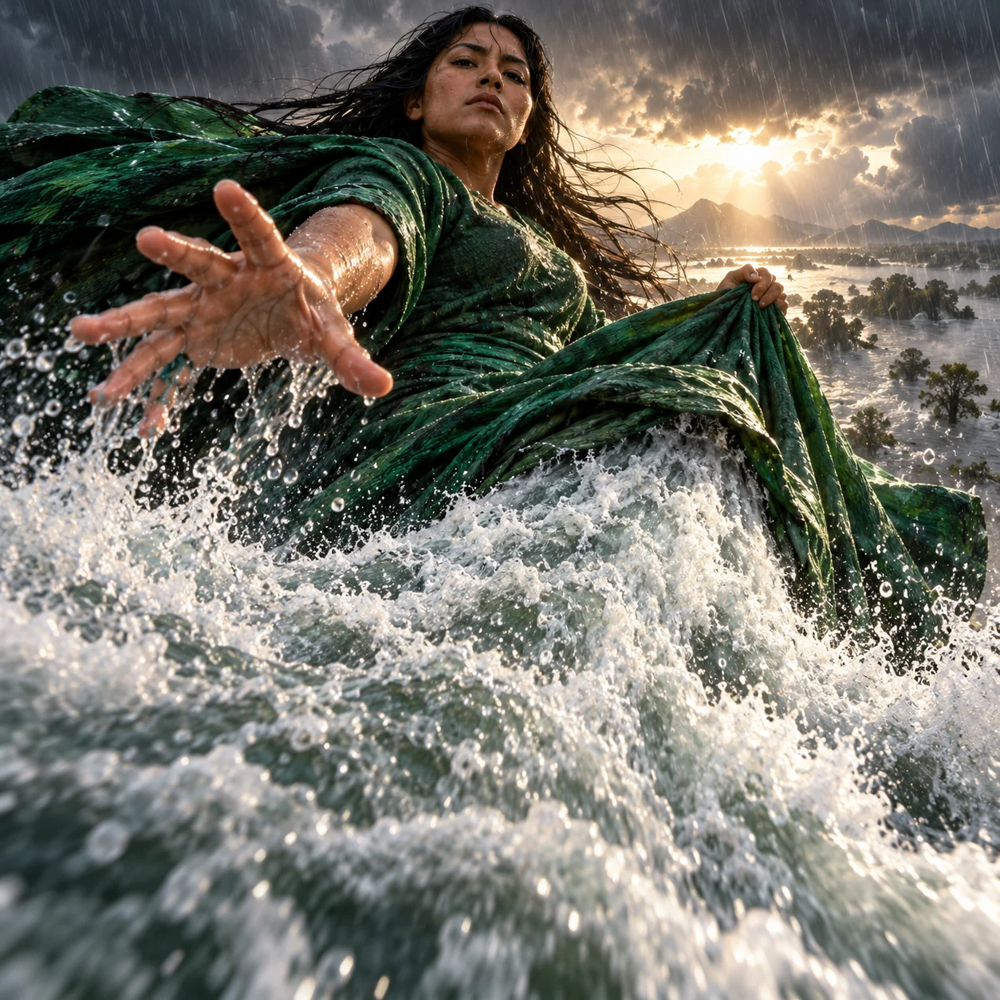
Living goddess issuing a powerful flood stream beneath an opaque emerald robe.
Aura: Commanding floodwater (c07) and stream issuing beneath goddess(c12), framed reverently as protector(c04,c09).
Audit ciri dan sumber
- [object Object]
- [object Object]
- [object Object]
Native+200px reviewed: active thrusting hand and lifting opaque skirt, physically connected flood emerging underneath garment c12; rain/deluge c07. Face and water remain imposing, anatomy consistent, no added iconography or magic. Seven Sangar tests pass.
Review sumberONE original square premium painterly cinematic Mitoloka illustration of Chalchiuhtlicue, Aztec goddess of lakes and streams, respectfully overwhelming in command of floodwater.
ANATOMY: one human female head, two arms, two hands, two legs under completely opaque heavy emerald robe and jade-green skirt; a living goddess, never stone sculpture. Female depiction grounded in the goddess image [chalchiuhtlicue-c12]; green garment is editorial inspired by her name [chalchiuhtlicue-c06,c13]. No invented crown, weapons, animal heads or jewelry.
MOMENT: Fling her heavy emerald skirt upward with one hand and thrust the other hand toward the viewer, eyes blazing with focused resolve: a gigantic dense river BURSTS from the underside of the lifted opaque skirt and crashes straight into the camera, physically connected to the goddess. Capture the exact moving instant of releasing the flood, twisted torso, flying cloth and charging wall of water. She must read as the overwhelming agent causing the entire deluge, never a woman merely standing in the water.
POWER: torrential rain and physically churning floodwater from the Fourth Sun flood [chalchiuhtlicue-c07]; a stream issuing from beneath the goddess [chalchiuhtlicue-c12]. Water must be actual heavy water with foam, not light ribbons.
SCALE & CAMERA: extreme low camera directly above the incoming water, close foreshortened goddess filling the upper three quarters; no tiny people or unsupported giant bodily size.
LIGHT & WEATHER: one warm break of light behind dense rain clouds, bright rim on her robe and water, deep shadows; driving rain and large splash.
SURFACE: weighty woven emerald cloth fully opaque even wet, natural skin, rough frothing floodwater.
SETTING: flooded lake and streams [chalchiuhtlicue-c11], almost submerged in foreground water; no invented temple.
MOOD: reverent, awe-inspiring divine authority, not monstrous, never a calm ordinary portrait.
HARD CONSTRAINTS: no text, lettering, logo, border, frame or watermark; no extra heads, limbs or fingers; no film/game/anime/comic design; no nudity, transparent cloth or explicit gore; no glow aura, neon outline, energy ribbons, headdress, weapons, serpents or tattoos.
Chessie (sea monster)
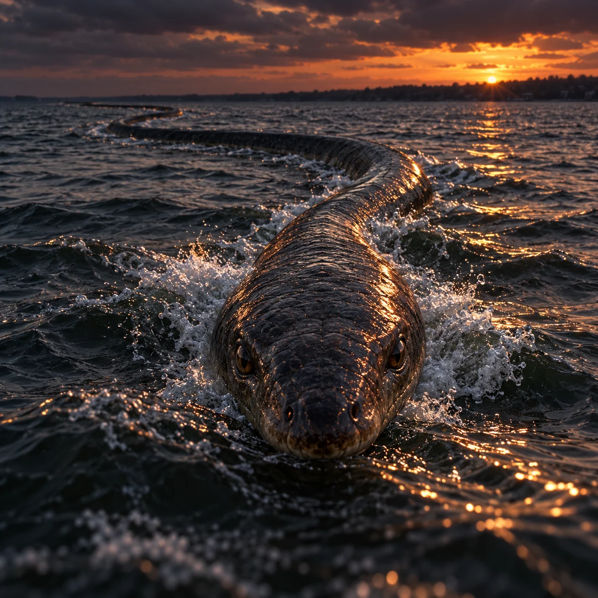
Narrow dark serpentine swimmer with football-shaped head approaching water-level camera.
Aura: Long dark serpentine swimmer(c04/c06) confronts from water-level perspective, without invented powers.
Audit ciri dan sumber
- [object Object]
- [object Object]
- [object Object]
Native and200px inspected: single continuous long narrow dark serpent, football-shaped head, no limbs/fins/horns; swimming toward camera makes an imposing encounter. Real wake c06 only; anatomy source c04; all seven Sangar tests yes.
Review sumberONE original square premium painterly cinematic Mitoloka illustration of Chessie, the reported long dark serpentine sea monster of Chesapeake Bay.
ANATOMY: exactly one football-shaped elliptical snake head and one continuous long thin serpentine body, 30 feet long but ONLY nine inches in diameter, dark coloration; no limbs, fins, horns, mane or wings [chessie-sea-monster-c04,c06]. Body is narrow and elongated, head gently elliptical not a dragon skull; natural small eyes.
MOMENT: swim rapidly straight toward viewer, blunt elliptical head just above water in extreme foreground and long narrow body undulating in S-curves visibly receding behind through the bay; stare confrontationally into camera, closed jaws, no invented fangs.
POWER: no documented supernatural power; visible wake and splash are ordinary physical swimming [chessie-sea-monster-c06].
SCALE & CAMERA: camera one inch above the bay surface, head fills upper-center foreground; narrow body readable relative to water ripples, do NOT thicken into massive dinosaur or enlarge beyond source measurements.
LIGHT & WEATHER: dying warm sidelight at dusk, dark sky, cold shadow water; bright rim on slick head and real wake splash.
SURFACE: dark wet finely textured snake skin and heavy actual water.
SETTING: Chesapeake Bay [chessie-sea-monster-c01,c06], far shore barely glimpsed behind the long body.
MOOD: an imposing unnerving close encounter, not cute, calm, decorative or distant.
HARD CONSTRAINTS: no text, lettering, logo, border, frame or watermark; no extra heads or body coils disconnected from single body; no limbs or fins; no borrowed film/game/anime/comic designs; no gore; no generic glow aura, neon outline, energy ribbons; no giant thick neck or dragon anatomy.
Chimata-no-Kami
Menunggu gambar yang lolos audit
Chimimōryō
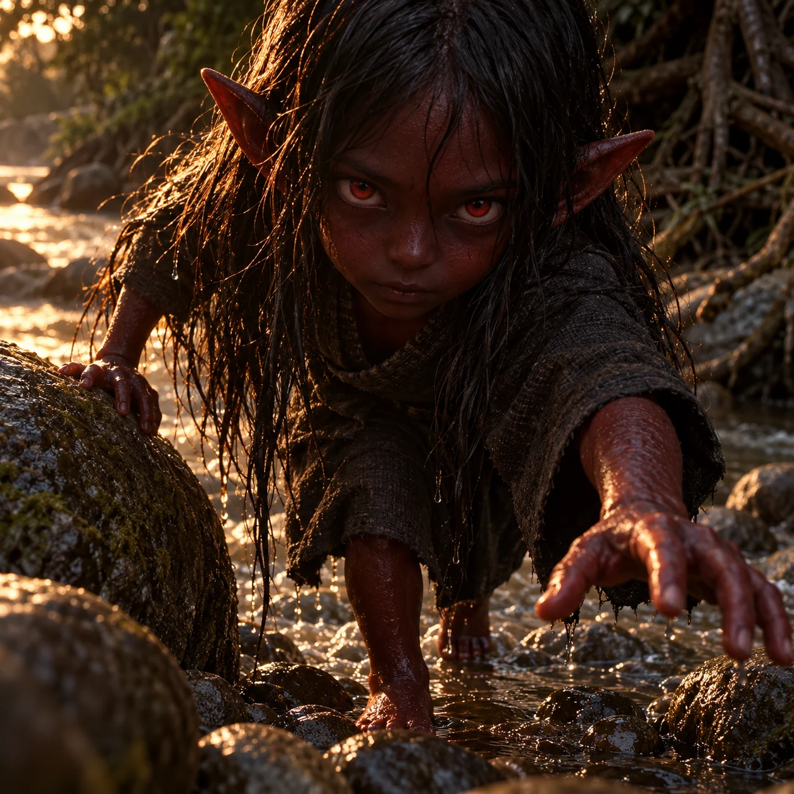
Moryo component: dark red childlike river spirit with red eyes,long ears and beautiful hair.
Aura: Dangerous uncanny small Moryo traits(c07) and harmful-spirit disposition(c03/c12); no abstract magical effect rendered.
Audit ciri dan sumber
- [object Object]
- [object Object]
Native+200px inspected: childlike two-legged dark-red Moryo with red nonemissive eyes,long ears,long hair,opaque robe, reaching while stepping from river rocks. Traits c07 readable thumbnail, threatening not cute; seven Sangar criteria pass.
Review sumberONE original square premium painterly cinematic Mitoloka illustration of Chimimoryo, selecting the documented Moryo river-spirit form rather than combining inconsistent variants.
ANATOMY: one young-child-like face and small bipedal body, exactly two arms and two legs, dark red nearly black skin, two RED eyes that do not glow, visibly LONG ears, beautiful long dark hair [chimimoryo-c07]. Completely opaque simple dark woven robe covers body to knees as editorial modest clothing. No horns, fangs, wings or animal limbs.
MOMENT: step from between wet river rocks toward the camera, one hand clutching a rock and the other reaching ahead, head thrust close to the viewer with a chilling intent stare, tangled motion in long hair. The uncanny red-black skin, red eyes and long ears must be unmistakable.
POWER: no magical effects shown; documented bewitching and dangerous character expressed through stare and approach [chimimoryo-c07,c03,c12], no corpse or gore.
SCALE & CAMERA: extreme low camera at the small creature's feet; tight close framing makes it dominate without enlarging its childlike bodily scale; ordinary river pebbles close beside feet.
LIGHT & WEATHER: one low warm sidelight, deep dark shadows, rim on ears and hair; real water droplets from stepping out of river.
SURFACE: natural matte dark-red skin, wet black hair, coarse fully opaque woven fabric and water-worn rocks.
SETTING: rivers, trees and rocks [chimimoryo-c07], close riverbank under dark tree roots.
MOOD: unnerving, dangerous and imposing small spirit, never cute or mascot-like, no smiling.
HARD CONSTRAINTS: no text, letters, logo, border, frame or watermark; no extra heads, limbs or fingers; no film/game/anime/comic design; no nudity or explicit gore; no aura, neon outline, energy ribbons, luminous mist or enlarged giant body.
Chinny-kinik
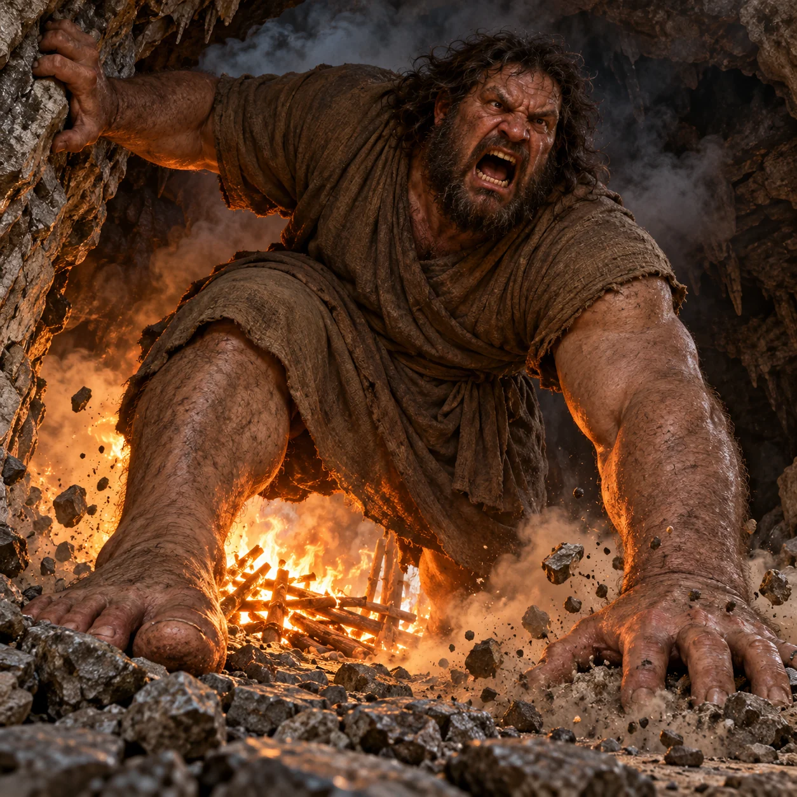
Cannibal giant physically struggling inside smoke-filled Pekarra cave.
Aura: Earth-shaking struggle(c08) and explicitly enormous cannibal giant(c01/c07), lit by trapping firewood(c03/c04).
Audit ciri dan sumber
- [object Object]
- [object Object]
- [object Object]
Native+200px inspected: enormous humanlike male giant strains within cave with planted foot/slamming hand, burning logs below and real dust/stone shaking c08; source giant size c01/c07; no invented anatomy or magic. All seven Sangar tests yes.
Review sumberONE original square premium painterly cinematic Mitoloka illustration of Chinny-kinik, the dreaded cannibal giant whose struggles shook the earth in his cave.
ANATOMY: one enormous humanlike male giant, one head, two arms, two legs, two natural eyes and ordinary human ears and teeth; no horns, tusks, animal features, tribal paint or invented iconography [chinny-kinik-c01,c07]. Fully opaque rough brown wrapped tunic to knees is editorial modest clothing, body entirely clothed.
MOMENT: wrench himself forward from the smoky cave, one vast hand braces the rock wall and the other slams down on the cave floor, torso twisting and jaws roaring in mighty struggle. Giant himself must dominate the frame, never only cave or fire.
POWER: mighty physical struggles shake the earth; loosened stones and dust judder upward from the floor under his impact [chinny-kinik-c08]. Ordinary firewood burning across entrance sends smoke through the lair [chinny-kinik-c03,c04,c08]; the giant does not produce fire.
SCALE & CAMERA: extreme low camera inside cave at giant's bare foot, full imposing head and hunched body fill frame; ordinary human-size stacked logs look tiny beside foot, giant size explicitly documented[c01,c07].
LIGHT & WEATHER: one orange blaze at entrance lights face and broad hands from below, smoke in cave shadows and dust shaken from stone.
SURFACE: tactile human skin, coarse opaque cloth, fractured rough limestone, charred wood.
SETTING: vast cave in Pekarra sinkhole [chinny-kinik-c02,c03,c07], firewood visibly blocks the entrance in lower background.
MOOD: dangerous overwhelming cannibal giant, fierce physical action; no gore, no caricature or cute demeanor.
HARD CONSTRAINTS: no text, lettering, logo, border, frame or watermark; no extra heads/limbs/fingers; no borrowed film/game/anime/comic design; no nudity or explicit gore; no generic glow aura, neon, energy ribbons; no magic fire or invented weapons.
Chipique
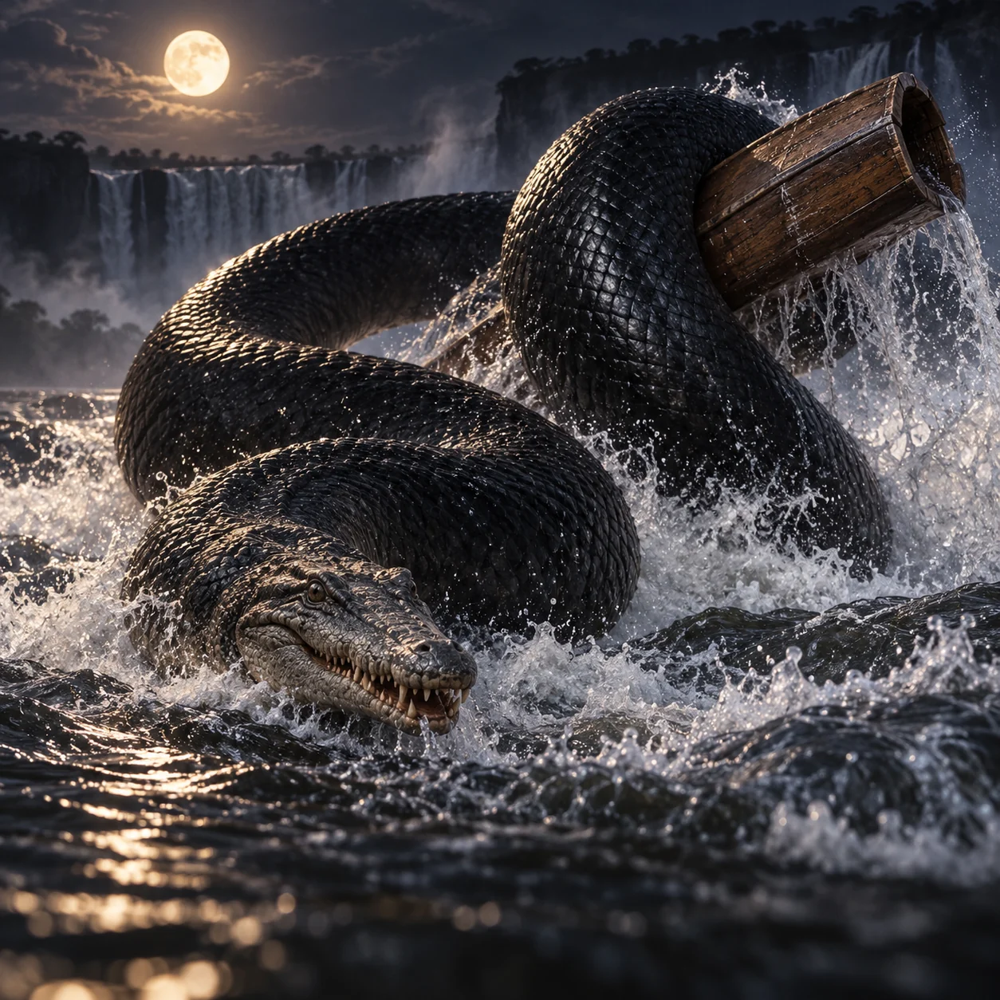
Small slate-grey crocodilian head and heavy black serpentine coils physically overturn a canoe.
Aura: Threat from canoe-overturning deed(c02/c06), heavy black coils and small slate head(c07), not added powers.
Audit ciri dan sumber
- [object Object]
- [object Object]
- [object Object]
Native+200px inspected: small slate-grey crocodilian head joins heavy continuous black serpent coils physically gripping and overturning canoe c02/c06; night Victoria Falls c05/c06. Monster fills frame; ordinary spray only, no invented appendages. Seven Sangar tests yes.
Review sumberONE original square premium painterly cinematic Mitoloka illustration of Chipique, the half-snake half-crocodile Zambezi water monster overturning a canoe.
ANATOMY: one SMALL slate-grey crocodilian head, two natural eyes, narrow crocodilian snout, and one very long heavy serpentine body wound into BLACK coils [chipique-c01,c07]. Thirty feet long[c06]; keep the head much smaller than its massive coiled body. Crocodile contribution expressed in snout and textured scale skin; no visible limbs because any appendages remain submerged, no invented horns, fins, wings or mane.
MOMENT: rise and twist toward viewer while a thick black body coil grips an ordinary wooden canoe and rolls it upside down, solid canoe visibly tilted and physically held by the continuous body. Head turns confrontationally toward camera, jaws part slightly with ordinary crocodilian teeth, no gore.
POWER: grab and immobilize a canoe[c06], overturn it[c02]; real displaced riverwater crashes around coils. No supernatural energy or magical control of water.
SCALE & CAMERA: extreme low river-surface camera; small grey head foreground, huge continuous black coils fill most frame; canoe near the body supplies sourced30-foot scale. Creature dominates, canoe secondary.
LIGHT & WEATHER: one warm moonlike sidelight against dark night, pale rim on slate head and water spray; no glow eyes.
SURFACE: wet grey crocodilian scale-texture head, heavy black scaled coils, scarred wet canoe wood, physically dense white spray.
SETTING: Zambezi river below Victoria Falls at night [chipique-c01,c05,c06], distant dark waterfall partially visible through ordinary spray.
MOOD: dangerous imposing nocturnal river monster, never calm or cute.
HARD CONSTRAINTS: no text, logo, border, frame or watermark; exactly one head and single connected serpentine body; no extra limbs, horns, fins or wings; no borrowed film/game/anime/comic design; no nudity or explicit gore; no glow aura, neon outline, energy ribbons or magical water.
Chōchinbi
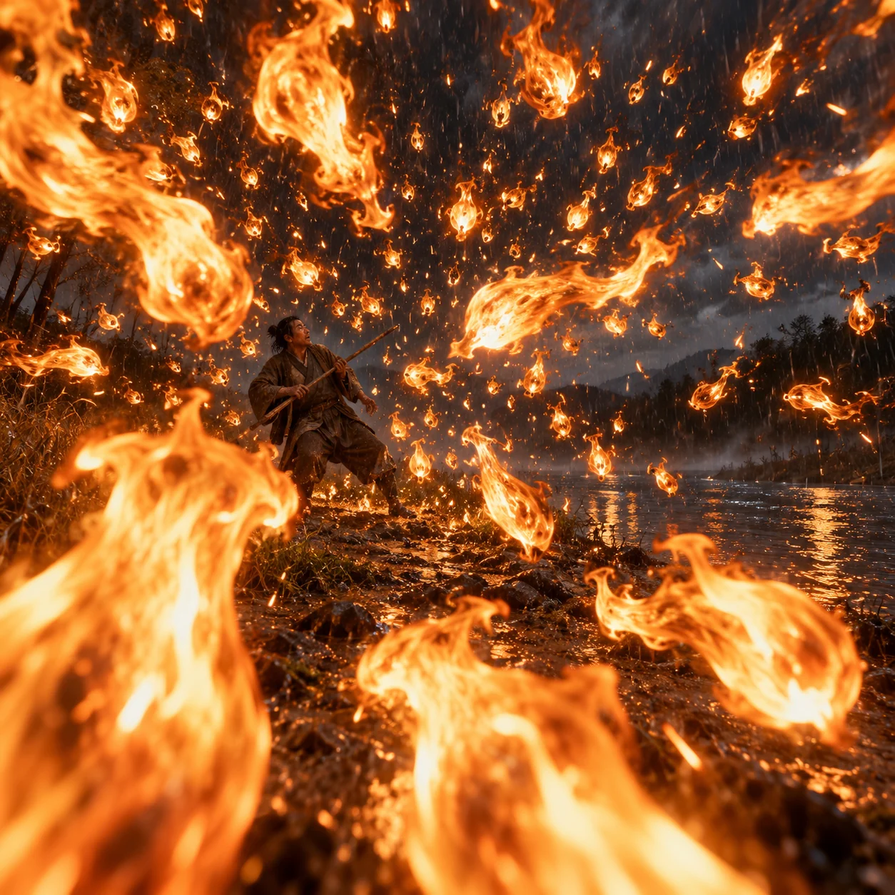
Koemonbi manifestation splits into hundreds of fires and surrounds rod-bearing Koemon.
Aura: Recorded fire fragmentation and encirclement(c11) overwhelm scene; no invented bodily form.
Audit ciri dan sumber
- [object Object]
- [object Object]
- [object Object]
Native+200px inspected: hundreds of actual ghostfire fragments dominate and surround small rod-bearing man, documented Koemonbi active manifestation c11 on rainy riverbank c10. No invented body/face; source-specific fire is subject rather than aura. All seven Sangar tests yes.
Review sumberONE original square premium painterly cinematic Mitoloka illustration of Chochinbi, choosing the Koemonbi story: a mysterious lantern-sized ghost fire bursts apart and surrounds the man who struck it.
ANATOMY: NO bodily form, face, eyes, arms or legs. The being IS a living mass of ghost fire, initially paper-lantern-sized [chochinbi-c10,c14], now physically split into several hundred separate FIRE fragments [chochinbi-c11]. No actual paper lanterns or lantern hardware, no foxes/tanuki, no invented monsters.
MOMENT: erupt violently outward from the struck central fire toward the camera while hundreds of torn tongues of fire close around Koemon. The closest split flames dominate the foreground as a terrifying active manifestation; one fully clothed man with a rod is small in middle distance, recoiling from his strike [chochinbi-c11].
POWER: documented mysterious fire splitting into several hundred pieces and surrounding Koemon [chochinbi-c11], ordinary amber flame lights his face and reflects on wet ground and riverwater; no other magic.
SCALE & CAMERA: extremely low close camera just beneath foreground fire fragments, fragments at various natural sizes surround viewer and man; do not make a giant person-shaped fire entity.
LIGHT & WEATHER: fire itself is the single dominant warm amber source, rainy evening and real droplets, deep riverbank shadows [chochinbi-c10].
SURFACE: painterly turbulent orange-white flame tongues with ember-dark edges, soaked earth, wet riverwater and rough opaque clothing.
SETTING: rainy evening on river bank, Matsudzuka in Yamato [chochinbi-c09,c10].
MOOD: terrifying supernatural fire with unmistakable agency and overwhelming movement, not a calm lantern row or landscape.
HARD CONSTRAINTS: no text, letters, logo, border, frame or watermark; no invented human ghost body, face, limbs, animals or actual lantern hardware; no film/game/anime/comic design; no nudity or explicit gore; no neon outlines, runes, energy ribbons or generic aura. Actual fire is the documented subject itself, not aura around another subject.
Cikap-kamuy
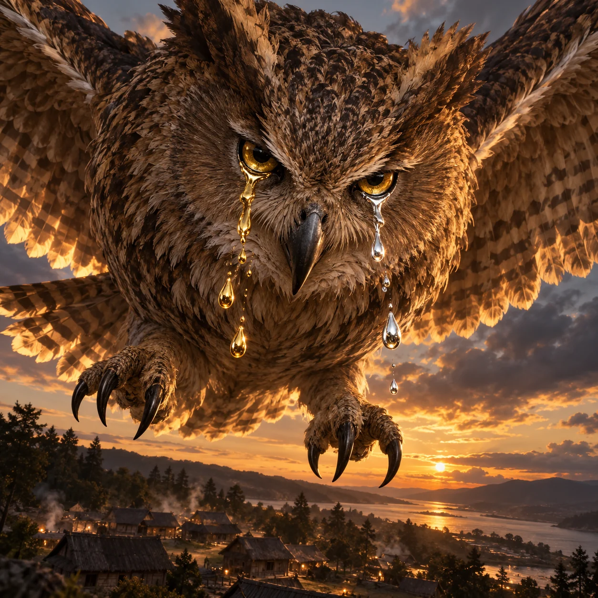
Great Blakiston's fish owl in protective wingbeat, shedding tangible gold and silver tears.
Aura: Divine protective authority through owl form(c04/c07), documented metallic tears(c06) and village oversight(c05), no added elemental power.
Audit ciri dan sumber
- [object Object]
- [object Object]
- [object Object]
Native+200px inspected: great fishowl with two wings/twofeet in forceful wingbeat, tangible gold and silver tear streams c06 read at thumbnail. Protective authoritative gaze over distant village c05; lowclose perspective, no emitting aura. Seven Sangar criteria pass.
Review sumberONE original square premium painterly cinematic Mitoloka illustration of Cikap-kamuy, reverently depicting the Ainu god as a great Blakiston's fish owl whose tears are gold and silver.
ANATOMY: one natural Blakiston's fish owl head with broad ear tufts, two eyes and strong beak, one owl torso, exactly two large feathered wings and two taloned bird feet [cikap-kamuy-c04,c07]. No human body, crown, jewelry or invented markings.
MOMENT: sweep toward viewer in a mighty wingbeat over the village he oversees; wings angle forward, head looks authoritatively downward into camera. Thick metallic GOLD and SILVER tears visibly roll from the two eyes down cheek feathers and fall as tangible droplets, not light beams [cikap-kamuy-c06].
POWER: actual tears made of gold and silver [cikap-kamuy-c06], metallic droplets falling toward wet earth; oversight of village[c05] expressed by protective commanding gaze. No earth magic, no glowing eyes or aura.
SCALE & CAMERA: extreme low close camera beneath owl's approaching head; head and forward wings fill frame, body natural great-owl scale not unsupported giant; distant small village roof silhouettes far below in background.
LIGHT & WEATHER: one warm dusk sidelight, deep walnut shadows, rim on layered brown feathers, gold/silver tears catch light as reflective liquid metal rather than emitting light.
SURFACE: richly layered brown owl plumage, strong natural beak, distinct liquid gold and silver tears on facial feather channels.
SETTING: above the local village he watches over [cikap-kamuy-c05,c08], minimal indistinct roofs and trees far behind.
MOOD: awe-inspiring protective divine authority, reverent and overwhelming, never evil, cute, decorative or ordinary resting owl.
HARD CONSTRAINTS: no text, letters, logo, border, frame or watermark; no extra heads, limbs or wings; no borrowed film/game/anime/comic design; no nudity or gore; no glow aura, neon outline, energy ribbons, luminous mist, giant size or invented iconography.
Clytius (Giant)
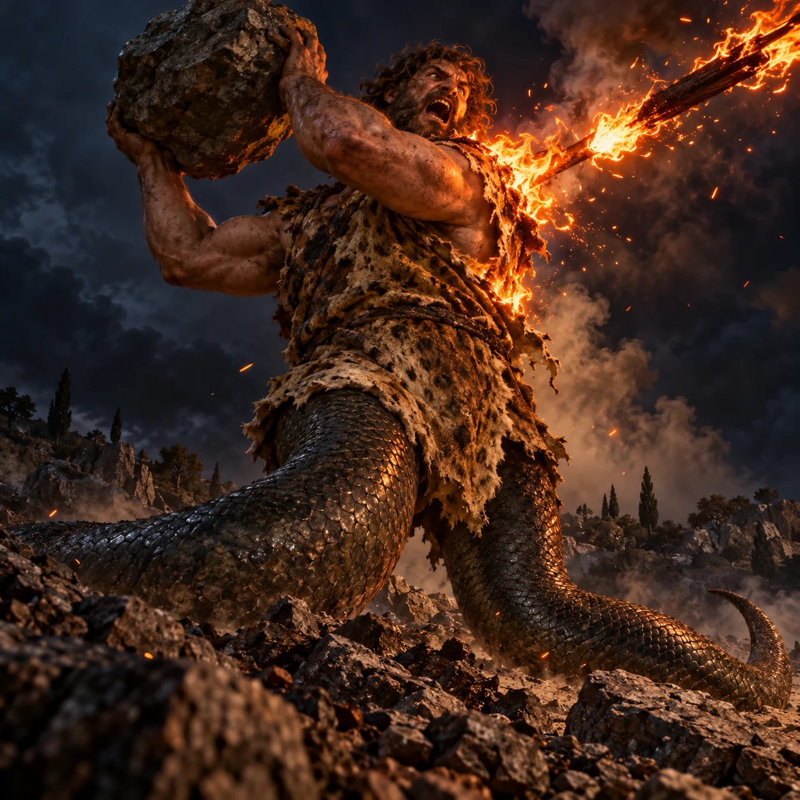
Animal-skin clad giant with two serpent tails in place of legs raises a rock while external firebrand burns garment.
Aura: Immense body(c05), serpentleg iconography and rockweapon(c06) during externally inflicted fire(c03/c04).
Audit ciri dan sumber
- [object Object]
- [object Object]
- [object Object]
Native+200px inspected: huge animalhide-clad giant/two continuous serpent leg-tails/no extra heads, raising rock; external torch visibly hits shoulder and garment burns. Source iconographyc06/sizec05/firec03c04. All seven Sangar yes, action and anatomy clear.
Review sumberONE original square premium painterly cinematic Mitoloka illustration of Clytius, immense Greek Giant fighting in the Gigantomachy while struck by the firebrands of Hecate.
ANATOMY: one immense humanlike male upper body, one head,two arms,two eyes; exactly TWO thick SERPENT TAILS in place of legs, both continuous from separate sides of his hips, each tapering to a simple pointed tail without a snake head. Fully opaque animal-skin tunic covers torso and hips; carries one rough boulder [clytius-c05,c06]. No horns,wings,extra faces or modern armor.
MOMENT: twist and rear angrily toward the viewer, both arms hoisting a huge rough boulder to throw while two serpent tails brace the rocky battlefield. A burning wooden firebrand from outside the frame strikes his tunic at the shoulder; the garment catches flame, giant roars defiance, no injury gore.
POWER: actual external firebrands burn him [clytius-c03,c04]; flames and smoke physically spread on animal-skin clothing, NOT fire generated by the giant. Strength and enormous body size [clytius-c05].
SCALE & CAMERA: extremely low camera beside two massive tapering serpent tails; upper body fills the frame and boulder rises above head, small distant ordinary trees establish immense size.
LIGHT & WEATHER: single dominant orange firebrand and garment fire light face/arms from side, deep night shadows, real sparks and smoke.
SURFACE: weathered natural skin, coarse fully opaque animal hide, dark wet serpent scales, rough boulder stone.
SETTING: rocky battlefield of war against Olympian gods [clytius-c01,c03,c11], minimal background no invented temples.
MOOD: dangerous imposing giant in active battle, never ordinary man or static portrait.
HARD CONSTRAINTS: no text,logo,border,frame or watermark; exactly one human head,twoarms,twolegreplacement serpentTAILS without snakeheads; no extra limbs or fingers; no film/game/anime/comic design; no nudity,transparent clothing or explicitgore; no generic aura,neon,energy ribbons; no giant-generated fire.
Damysos
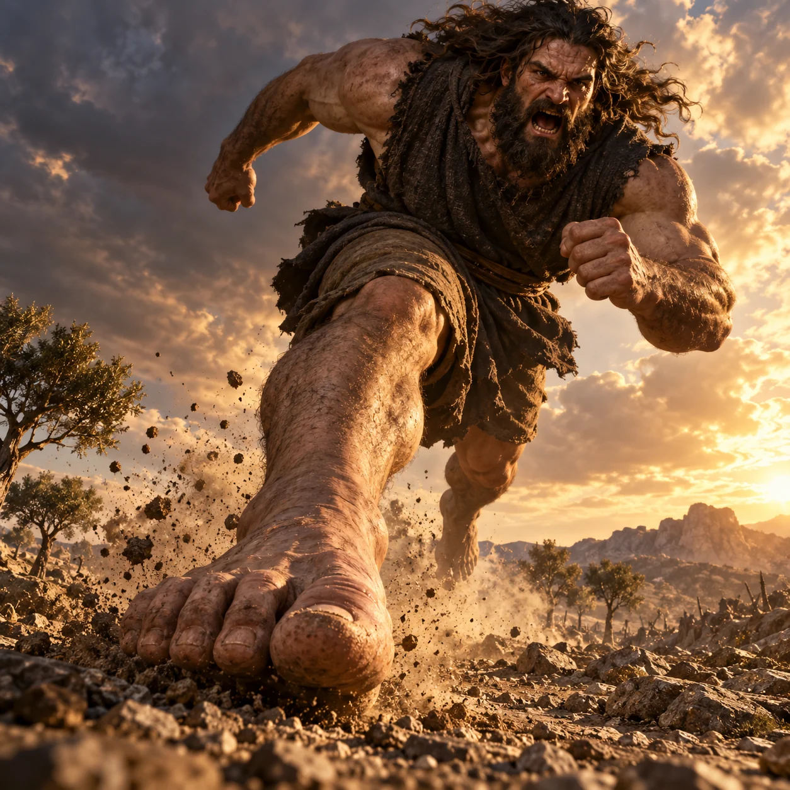
Enormous humanlike swift Giant sprints toward camera with source-grounded feet and ankles.
Aura: Documented immense Giant body(c07) and fastest running(c01/c03/c04) create physical intimidation.
Audit ciri dan sumber
- [object Object]
- [object Object]
- [object Object]
Native+200 inspected: imposing enormous Giant sprinting toward low camera, two human legs/feet with visible ankle, rapid physical dust, source fastestc01c03 and immensec07. No imported serpent iconography or magical speed trails. Seven Sangar tests yes.
Review sumberONE original square premium painterly cinematic Mitoloka illustration of Damysos, fastest of the Greek Giants, charging across the Gigantomachy battlefield with overwhelming physical speed.
ANATOMY: one enormous humanlike male giant, one head,twoarms,twolegs,twoeyes; two ordinary human feet and prominent ankles, consistent with source ankle-foot account [damysos-c01,c03,c04,c07]. Fully opaque rough dark wool tunic and wrapped knee-length lower garment editorial; no horns,wings,serpent legs,animal head,weapon or invented iconography.
MOMENT: sprint explosively straight toward the viewer, rear foot pushing hard off ground while forward foot sweeps into extreme foreground, muscular body pitched forward, one arm thrusting back and the other bent forward; intense confronting face, open mouth exerting, not static standing.
POWER: extraordinary running speed, fastest of all Giants [damysos-c01,c03,c04]; real dust and pebbles kicked back by foot contact only, no lightning or supernatural speed trails.
SCALE & CAMERA: extreme ground-level camera beside incoming massive bare foot and ankle, fullbody and face loom overhead; ordinary trees beside the foot are small enough to show documented unsurpassed giant body size [damysos-c07]. Foot must have five natural toes, no hoof or snake tail.
LIGHT & WEATHER: single warm dying sunlight from side, deep walnut shadows, dusty air backlit; no magical weather or fire.
SURFACE: natural weathered human skin, tough bare soles, rough fully opaque wool, dry battlefield grit.
SETTING: rocky battlefield during war against gods [damysos-c03,c06], minimal distant ordinary trees, no invented temples.
MOOD: dangerous imposing colossal runner in an instant of violent acceleration, never an ordinary human or calm portrait.
HARD CONSTRAINTS: no text,logo,border,frame,watermark; onehead,twoarms,twolegs,twofeet; no extra limbs/toes/fingers; no film/game/anime/comic design; no nudity or explicit gore; no glow aura,neon,energy ribbons,speedlightning,serpentlegs,wings or invented weapons.
Dokkakgwi
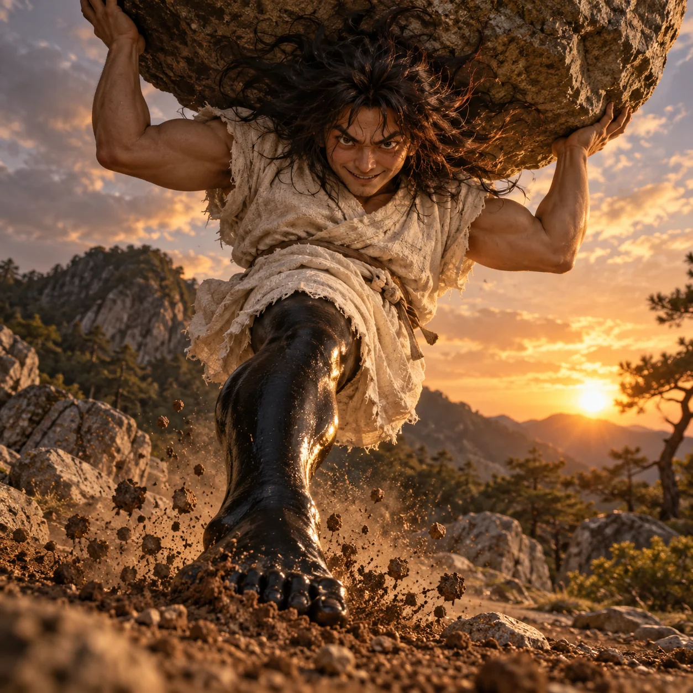
One-legged lacquer-black-legged dokkaebi hops while physically lifting stone.
Aura: Uncanny singleblackleg(c06/c07) and physically expressed superhumanstrength(c10), mischievous rather than evil(c11).
Audit ciri dan sumber
- [object Object]
- [object Object]
- [object Object]
Native+200 inspected: one continuous black lacquer-like leg/onefoot, disheveledhair, twoarms physically lifting boulder; forwardhop clearly readable. Mischievous intent not evil caricature; strengthc10 actual physicaleffect, no magic. Seven Sangar tests yes.
Review sumberONE original square premium painterly cinematic Mitoloka illustration of Dokkakgwi, the one-legged Korean dokkaebi, demonstrating superhuman strength in a sudden forward hop.
ANATOMY: one humanlike head with wildly disheveled dark hair, two natural eyes, two arms, and exactly ONE leg and ONE foot, the entire single leg BLACK as if lacquered [dokkakgwi-c01,c06,c07]. The single leg descends continuously from center of pelvis; no second thigh,knee,foot,stump or hidden limb. Fully opaque white rough wrapped tunic covers torso/hips but ends above knee so single black leg is unmistakable. No horns,tusks,wings,club or invented iconography.
MOMENT: hop forcefully directly toward viewer on the one lacquer-black leg while lifting a great rough boulder with both arms, demonstrating documented superhuman strength; hair flies with movement, intense defiant mischievous stare rather than evil demon face.
POWER: superhuman strength [dokkakgwi-c10], physically lifting a heavy boulder; real soil dust displaced by single foot landing, no magic aura or invisibility effect.
SCALE & CAMERA: extreme low close camera beside the single foot, whole figure fills frame from foot to hair; no unsupported giant size or sky-touching variant, just foreshortening.
LIGHT & WEATHER: one warm dusk sidelight, deep walnut shadows, black leg catches lacquer-like reflected highlight without glowing.
SURFACE: tactile natural face/hands, coarse opaque white cloth, smooth-black single leg, rough heavy stone and dry soil.
SETTING: mountain field with natural stones and trees [dokkakgwi-c09], minimal background to retain readable anatomy.
MOOD: imposing uncanny folk spirit with awe at physical strength, never cute, calm, generic ordinary human or gratuitously evil.
HARD CONSTRAINTS: no text,logo,border,frame,watermark; exactlyonehead,twoarms,ONEleg,ONEfoot; no second hidden leg/stump,extra toes/fingers; no film/game/anime/comic design; no nudity/transparentcloth or gore; no generic aura,neon,energy ribbons,horns,wings,club,giantbody or magical floating boulder.
Döö
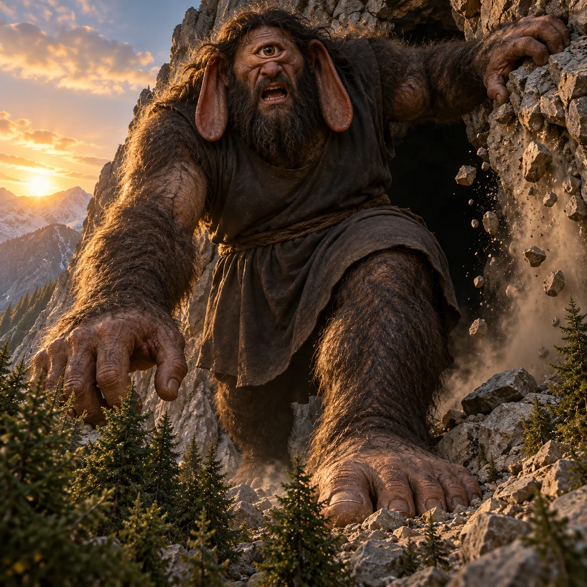
Single-headed weaponless hairy mountain-sized Doo with one foreheadeye and huge draping ears emerges from cave.
Aura: Source mountain-sized body(c02),singleeye(c03),hair(c07),immense brute strength(c10) create threat without invented magicaleffect.
Audit ciri dan sumber
- [object Object]
- [object Object]
- [object Object]
Native+200 reviewed: single foreheadeye/no normaleye pair, onehead,twoarms/twolegs, dense exposedhair, huge drapingears, opaque tunic. Mountain-scale via nearbytrees, cave-emergence physical strength/dustc10. No inventedspell/weapon; all seven Sangar tests yes.
Review sumberONE original square premium painterly cinematic Mitoloka illustration of Doo, Kyrgyz mountain-sized hairy one-eyed giant emerging from a remote mountain cave.
ANATOMY: exactly ONE humanlike head, exactly ONE large eye centered high in the FOREHEAD, no other eyes or eye sockets. Two arms,twolegs; huge pendulous human ears long enough to lie on and cover himself with [doo-c03,c04]. Human form of mountain-sized giant[c02], exposed body completely densely hairy[c07], coarse dark hair across arms,hands,legs,neck and cheeks. Fully opaque heavy dark tunic covers torso/hips to knees, editorial modest clothing. No horns,wings,animal snout,extra heads or weapons; choose single-head weaponless variant[c09].
MOMENT: thrust himself out of dark mountain cave toward viewer, one vast furry hand gripping cave lip and other reaching down, forward foot planting in foreground. His single forehead eye fixes viewer, jaws roar; cave-edge stones dislodge from physical force.
POWER: immense brute strength [doo-c10] physically shifts loose cave rocks under gripping hand, dust cascades onto trees. No spell effects or invented elemental magic despite abstract magical-power claim.
SCALE & CAMERA: extremely low camera near the mountain-sized giant's foot; small actual evergreen trees directly beside foot establish source mountain scale[c02], face and one forehead eye large and readable high in frame.
LIGHT & WEATHER: one warm last-sun sidelight, deep cave shadows, harsh rim along coarse fur and enormous ears; ordinary rock dust.
SURFACE: thick coarse dark bodyhair, weathered humanlike face, matte opaque tunic, rough mountain stone and grit.
SETTING: remote mountainous cave rarely approached by people[c08,c09], rocky slope with small dense forest trees.
MOOD: dangerous imposing monstrous giant, never ordinaryhuman, cute, calm or decorative.
HARD CONSTRAINTS: no text,logo,border,frame,watermark; ONEhead,ONEforeheadeye,TWOarms,TWOlegs; no normal pair of eyes beneath forehead,extra heads,limbs or fingers; no film/game/anime/comic design; no nudity,transparentcloth or gore; no glow aura,neon,energy ribbons,runes,magicbeam,weapon or whip.
Dot
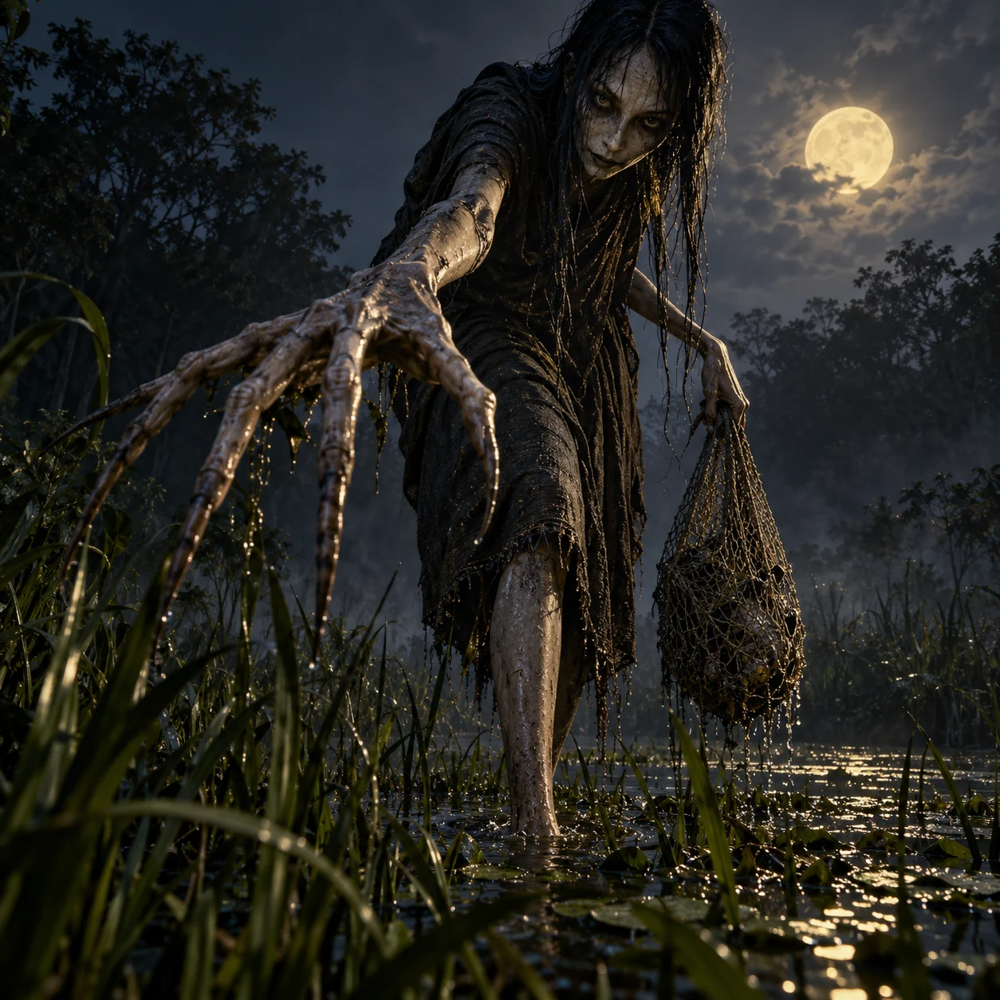
Slender18foot aquatic spirit reaches spikefingers while carrying source netbag.
Aura: Eighteenfootslender body/spikefingers(c08) and sinister pond-luringcharacter(c01c02c03); no added magicaleffect.
Audit ciri dan sumber
- [object Object]
- [object Object]
Native+200 inspected: slender looming18ftfigure with5longspikefingers on reachinghand, netbag held otherhand; wades pondreeds sourcec07, no magic/horseform. Scale via reeds beside ankle, intimidating moment and features readable. All seven Sangar yes.
Review sumberONE original square premium painterly cinematic Mitoloka illustration of Dot, the sinister Assamese aquatic spirit: an eighteen-foot slender figure with spike-like fingers and its net-bag talisman.
ANATOMY: one very slender tall humanlike figure about18feet high, onehead,twoarms,twolegs,twoeyes; extremely LONG thin fingers tapering like SPIKES on both hands [dot-c08]. No horsehead, horns,wings,extra eyes or fangs. Opaque dark worn robe covers torso and hips to knees, editorial modesty; hands and slender shins exposed. One ordinary mesh NET-BAG carried in left hand [dot-c05], never glowing.
MOMENT: wade from dark pond vegetation straight toward viewer, bend the long torso downward and reach right hand almost into camera, five spike-like fingers splayed threateningly; lefthand holds netbag beside hip. Head inclines into confronting gaze as if luring viewer toward pond[c02,c03].
POWER: no abstract deceit rendered as magic; physical water ripples and vegetation brush from wading only, threat through documented tall slender anatomy and spikefingers[c08].
SCALE & CAMERA: extreme low camera at pond-edge reed height; full slender18footbody looms above ordinary4footreeds directly beside ankles, hand foreshortened forward but face clearly readable. Body is thin, never bulky giant.
LIGHT & WEATHER: one pale warm moon sidelights face,fingers and net, deep shadow pond, ordinary damp mist with no luminous color.
SURFACE: tactile natural weathered face, long thin hands with spikefingers, rough fullyopaque cloth, wet woven meshbag, real marshwater and plants.
SETTING: shaded remote pond/morass overgrown with wateryplants[dot-c04,c07], water and reeds partially conceal feet but bothlegs read.
MOOD: dangerous unnerving looming aquatic demon, never ordinaryperson,cute,calm or decorative.
HARD CONSTRAINTS: no text,logo,border,frame,watermark; onehead,twoarms,twolegs, five elongatedfingers perhand; no extralimbs/fingers; no film/game/anime/comic design; no nudity,gore,horsehead,horns,wings; no glow aura,neon,energy ribbons,magicalnet or invented watercontrol.
Dungarvon Whooper
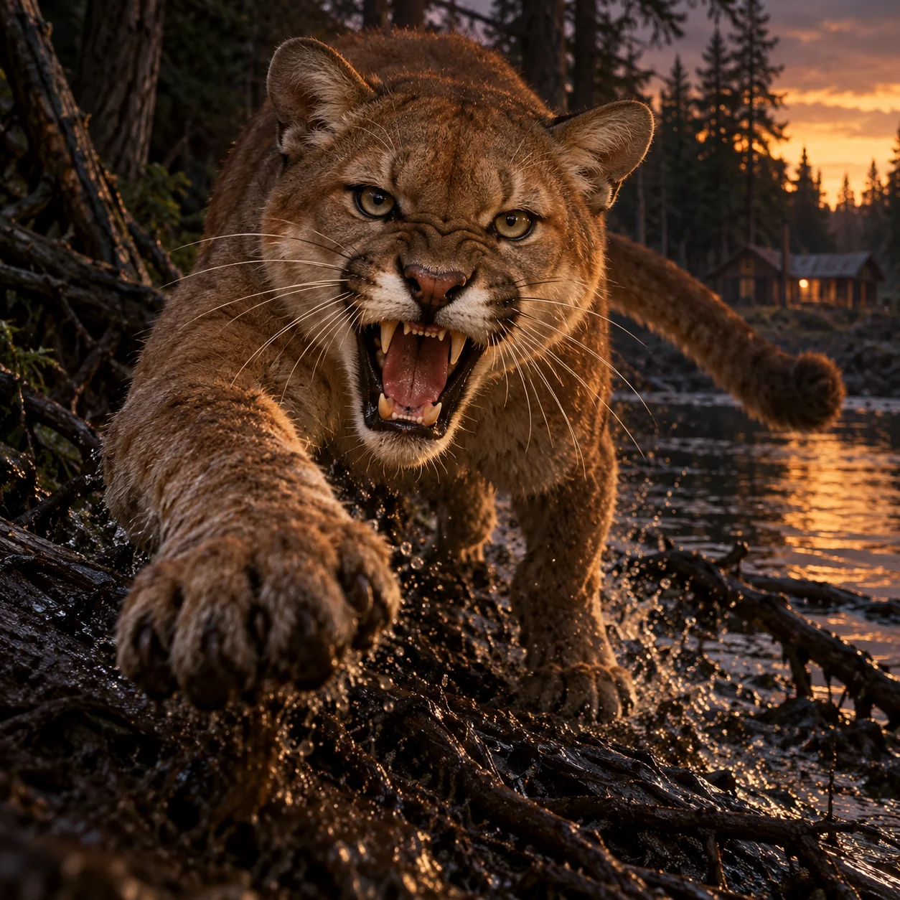
Documented puma-like creature version, natural feline anatomy in fierce close charge and cry.
Aura: Puma-like documented form(c03) and terror/rage cries(c05/c14) create confrontation; no unsupported ghostbody or powers.
Audit ciri dan sumber
- [object Object]
- [object Object]
Native+200 inspected: natural puma-like creature variantc03, four felinelegs/onetail, confronting close bound with cry, rivercamp/duskc02c14c16; no supernatural anatomy/body/effects. Threatening encounter, allseven Sangar tests yes.
Review sumberONE original square premium painterly cinematic Mitoloka illustration of the Dungarvon Whooper, explicitly selecting the documented PUMA-LIKE CREATURE version rather than inventing the invisible ghost's body.
ANATOMY: one natural puma-like feline head,twoeyes,fourfelinelegs,longtail, tawny natural puma fur, rounded cat ears, ordinary feline jaws and teeth [dungarvon-whooper-c03]. No ghostly human body,horns,wings,emissiveeyes,transparency,extra limbs or invented supernatural traits.
MOMENT: erupt from dark riverbank directly toward the viewer, one forepaw hurls forward almost into camera, jaws open in a harsh confronting cry; all paws and connected feline body clear, tail sweeps behind. This is a dangerous sudden close encounter, never a peaceful ordinary animal at pasture.
POWER: no supernatural effect visualized. The haunting's terrible cries [dungarvon-whooper-c05,c14] staged through wide-open puma-like jaws; no visible soundrings, forcewaves or invented magic.
SCALE & CAMERA: extreme low close camera directly in front of charging puma, head and forepaw fill most frame, natural puma scale only, never giant.
LIGHT & WEATHER: one low warm dusk sidelight catches face and paw, deep shadows in wet bank, ordinary mud and droplets kick up from footcontact.
SURFACE: dense damp tawny felinefur,naturalnose/teeth, heavy darkmud, wet riverbank roots.
SETTING: Dungarvon River by a New Brunswick loggingcamp [dungarvon-whooper-c02,c16], dusk [dungarvon-whooper-c14]; small dim cabin silhouette behind trees far away, no added people or victims.
MOOD: terrifying ferocious physical encounter, unmistakable dominant creature, not cute,calm or decorative.
HARD CONSTRAINTS: no text,logo,border,frame,watermark; onehead,fourlegs,onetail; no extralimbs; no film/game/anime/comicdesign,especiallyno comicadaptationborrowed; no gore; no human ghostbody,glowaura,neon,energyribbons,sonicrings,emissiveeyes,transparency or giantbody.